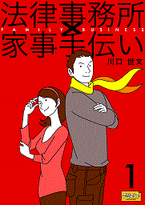
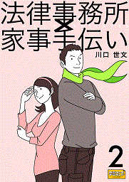

| 「法律事務所×家事手伝い」副読本Ｚ 前説×後説集 | |
| 川口 世文 | |
| DENMEI SHOBO (2013) | |
「法律事務所×家事手伝い」副読本Ｚ 前説×後説集
川口世文
|
１ 「法律事務所×家事手伝い」副読本Ｚ 前説
花梨 ：『「法律事務所×家事手伝い」副読本Ｚ』をお手にとっていただき、誠にありがとうございます。この電子書籍は「前説×後説集」という副題のとおり、ほぼ全編が「登場人物コメンタリー」という名の〝キャラクター漫才〟──〝人畜無害な会話集〟で構成されています。
正義 ：あのさあ、「副読本Ｚ」の〝Ｚ〟って何だよ？ これが最後ってことか？ それとも次は〝ＺＺ〟なのか？ 〝ＺＺＺ〟までいったら寝ちまうぞ。
花梨：うるさいな、セイギ！ 今、挨拶しているところなんだから......。
正義：挨拶って誰に？
花梨：と、こんな風に基本的にはバカな会話が１ページずつ連続する「特殊なレイアウト」になっています。ちょうど〝ゲーム〟のテキストをボタン送りをする感じで〝読み飛ばして〟いっていただければ幸いです。
正義：って、誰に話しているんだよ？
花梨：ったく、うるさいな......おまえが説明するか？
正義：わかったわかった、いいから先に進めなさい。
花梨：......先に進めるに当たって、いくつか【注意事項】がございます。この「前説×後説集」は『法律事務所×家事手伝い』のパート１「不動正義と最初のスイーツ」とパート２「不動正義とニュースの女」をパブーに分冊版として連載していたときの「前説」「後説」なのですが、連載当時とは本編の「章立て」が変更になっています。詳しくは次のページ以降をご覧ください。ややこしくてごめんなさい。
パート１「不動正義と最初のスイーツ」章立て変更一覧
・旧版プロローグ → 新版７章
・旧版第１章 → 新版１・２章
・旧版第２章 → 新版３・４章
・旧版第３章 → 新版５・６章
・旧版第４章 → 新版８・９章
・旧版第５章 → 新版10・11章
・旧版第６章 → 新版12・13章
・旧版第７章 → 新版14・15章
・旧版第８章 → 新版16・17・18章
・旧版第９章 → 新版19・20章
・旧版最終章 → 新版21・22章
パート２「不動正義とニュースの女」章立て変更一覧
・旧版プロローグ → 新版プロローグ
・旧版第１章 → 新版１・２章
・旧版第２章 → 新版３・４章
・旧版第３章 → 新版５・６章
・旧版第４章 → 新版７・８章
・旧版第５章 → 新版９・10章
・旧版第６章 → 新版11章
・旧版第７章 → 新版12・13章
・旧版第８章 → 新版14・15章
・旧版第９章 → 新版16・17章
・旧版最10章 → 新版18・19章
・旧版最終章 → 新版20・21・22章
正義：──で、ございまーす！
花梨：次は【推奨環境】と......お読みいただく際には表示される文字を大きめに表示することをお勧めします。ちなみにわたしがKindleで読むときは、いちばん大きな文字から２番目のサイズにしています。
正義：──で、ございまーす！
花梨：えーと、それから【免責事項】として次の２点にご注意ください。
正義：──で、ございまーす！
花梨：その１：タッチパネルの〝連打〟による表示機器の故障、および人体への影響についてのクレームはご容赦願います。つまり、タブレットが故障したり、腱鞘炎 になったりしても責任はとれませんってことね──そこは皆様、自己責任でお願いします。
正義：そこまで早く読むやつがいるか？
花梨：うるさい！ その２：文中で語られる本シリーズの今後の「展開」については大幅に変更する場合もございますので、ご理解のほどよろしくお願いいたします。
正義：要するに「誰も信用するな」ということだな。
花梨：ちなみに〝旧パブー版〟のパート１から４までを便宜上「シーズン１」、それ以降を「シーズン２」と呼んでいましたが、「新版」では最初の10冊を「第１シリーズ」と呼ぶそうです！......はあ、だんだん疲れてきた。
正義：──で、ございまーす！
花梨：ホントにうるさいな、さっきからそればっかりで。大体、こういう説明は主人公であるおまえがやるべきじゃないのか？
正義：まあ、そこは常日頃「客商売」に慣れていらっしゃる花梨さんにお任せすることにしていますから......。
花梨：こういうときだけ調子がいいんだから──もう！
正義：これで終わり？......もう帰ってもいい？
花梨：まったくおまえは、どうしようもないバカ......。
正義：──で、ございまーす！
花梨：......では、こんな男は放っておいて、早速「パート１」の「前説×後説集」からどうぞ──。
『法律事務所×家事手伝い１ 不動正義と最初のスイーツ』の巻

「１９０センチ、４０歳、〝家事手伝い〟で何が悪い？」──弁護士事務所という「家事」を手伝う不動正義、その奮闘と失恋を描いたホーム（法務）＆ハートフルコメディ──〝オトナが読むライトミステリー〟第１弾！
ご購入はこちらから：
２ ５分で読める！「法律事務所×家事手伝い１」
〈三毛猫〉〔注〕のカウンター席に、不動正義（もうすぐ40歳。１９０センチ近い大男。父親が経営する弁護士事務所という「家事」を手伝っている）と花梨（正義の義理の妹。最近、実家に出戻ってきたばかり。娘が１人いる）が座っている。
〔注〕〈三毛猫〉は東京・雑司ケ谷 にあるお店。午後６時まではカフェ、６時以降はワインバー。なので、この時間２人は素面 で話している。ちなみに早朝には通勤者向けにおにぎりを販売している「三毛作」の店である。
「わたしのこの紹介文、気に入らないけど、細かいこといわない。ささっとやっちゃおう」
そういったのは花梨。
「何しろっていうんだよ、一体？」
「『法律事務所×家事手伝い１』を公開してから２週間経つから、何かテコ入れしたいんだって」
「テコ入れ？」
「『５分で語れ』って」
「５分で？」
「そう」
「おれたちが語るの？」
花梨はもう一度うなずいた。
正義はカウンターのいちばん端に座ってアイスティーを飲んでいる男に目を向けた。
「......人のプライバシーを公開している男に協力なんかできるか」
「まあ、そういわずに......一言ぐらいいって帰ろうよ」
花梨は大人の態度で、立ち上がろうとする正義を引きとめた。
「......って、この小説みたいなト書き──地の文？ やめない？ あと、わたしの言葉が、いちいちカギカッコされるのも窮屈なんだけど──」
花梨：そうそう、このスタイルの方がまだいい。
正義：一言だけいえばいんだな？
花梨：でいいと思う。５分も語らなくても、５秒でいい。
正義：現代人は何かと忙しいからな。
花梨：そうそう。
正義：まあ、一言でいえば、おれが失恋する話？
花梨：そうじゃないでしょ、本当はこのわたしが〝スイーツ〟に巡り合う話でしょ？
正義：あれ、そこから意見が違うのか？ 主役はおれだろ？ 『不動正義と最初のスイーツ』っていうぐらいなんだから。
花梨：でも、誰もセイギになんか興味ない。
正義：そんなこといったって、大半はおれが出ている。読者はおれに付き合わされるんだ。
花梨：わたしだって結構出ている。
正義：川越にいったのも、裁判員裁判を傍聴したのも、おれだぞ。
花梨：わたしだって、川越にいったし、汐里 〔注〕の新しい学校にもいった。
〔注〕汐里は花梨の娘。
花梨：あのねえ、会話の途中で〝注〟をはさまないでくれる？
正義：ぶつくさいうな！ 事件を解決したのもおれだ！
花梨：事件を解決したのは実質的にはパパ〔注......なし〕でしょ？
正義：ああ、そうだよ。おいしいところは全部オヤジが──あの先生がもっていくんだから。弁護士だからって、小説の主役を奪う権利はないよな？
花梨：まあ、それはそうね。実の親であってもね。
正義：権利の侵害だよな？
花梨：裁判でも起こすつもり？
正義：そうだな......オヤジに弁護してもらうか。
花梨：あのねえ、セイギはいっつもそうだ。そうやって話がこんがらかっていくのよ。
正義：何だよ、悪いか。この話はな、一言でいえば、弁護士になれなかった男が、弁護士の父親に主役を奪われる悲しい話なんだよ。
花梨：シェイクスピアの悲劇みたいにいうな。
正義：だってそうだろ？ これはどう読んでもコメディじゃない、１人の男の悲劇だ。
花梨：はいはい、それで、気が済んだ？ そんなことより、〝初美 さん〟の話とかしなくていいの？
正義：何だよ、急に。
花梨：そこ重要よ。
正義：誰がするか、人前で。
花梨：耳が赤くなっているぞ。
正義：ほっとけ。
花梨：セイギはさ、結局、初美さんのことが好きだったわけ？
正義：おまえねえ、酒も飲まずによくそうズケズケものがいえるな。
花梨：だって、彼女が今回の話のマドンナでしょ？
正義：まあ、〝ドンナ〟ぐらいの存在ではあるけど。
花梨：「マ」が抜けたいい方だけどね。で、どうなの？
正義：ああ、そうそう、そういえば、例の裁判の話とかしなくていいのか？──あの悲しい事件のことを。
花梨：ごまかすな。
正義：川越の話とか？
花梨：ごまかすなって。
正義：じゃあ、スイーツは？
花梨：スイーツ？......うん、まあ、それは重要。
正義：初美さんが作った「紅赤丸 」〔注〕、あれはうまかったなあ。あの味は小説じゃあ絶対伝わらないよな。
〔注〕「紅赤丸」というのは小説に登場する創作和菓子のこと。川越の「紅赤」さつまいもを使ったもので、「カリンジャム」の酸味が加えてある。
花梨：まあ、この注は許す。
正義：電子書籍だと味もわかるようになるのかな？
花梨：んなわけない。
正義：いやいや、あと10年先のことを考えてみろ。
花梨：考えないし、考えたくない。
正義：手触りを感じられるタッチパネルの技術は、もうあるらしいぞ。
花梨：何それ？
正義：革の質感とか、人肌のぬくもりとかが、指先で電気的にわかるの。
花梨：何だか表現がいやらしい。
正義：だから、きっとそのうち味もわかるようになる。
花梨：Kindleとかの画面を舐めるの？
正義：そうそう。画面に「紅赤丸」の絵が出てきて、それを舐めると味がする。この店のワインも、客がリストを舐めて選ぶようになる。
花梨：......バカバカしい。
正義：だから10年早かったんだよ、この小説の公開は。
花梨：10年経ったら、もう50歳だろ？ 50になって40のときの恥をさらされるのと、今すぐさらされるのではどっちがいい？
正義：どっちもいやだよ。
花梨：究極の選択。辛いことがどうせ起きるなら、早く過ぎ去ったほうがいいんだよ。
正義：おまえにそういわれると弱るな......。
花梨：あ、ちょっと待って、湿っぽいのなし、なしだからね。そもそも『５分で語れ』なくなっちゃう。
正義：そういやもう５分過ぎたかな？
花梨：とっくに過ぎていると思う。
正義：一言で終わらせるはずだったのにな。
花梨：ほかにいい残したことはない？
正義：ええと、オヤジへの文句はいった、と。裁判の話、川越の話はほとんど話していないけど、まあいいか。「紅赤丸」については１０年後に舐めてもらうとして......大体これでいいかな？
花梨：......で、〝初美さん〟の話は？
正義：それこそ、おまえ、ネタバレだろ？
花梨：でも、「失恋」の話って公表されているんだよ。
正義：え、そうなの？
花梨：そうだよ。
正義：だったらますますいうことないよ。司法試験に落ちても、けなげに「家事」を手伝ってがんばっていますと、こういう男も世間の片隅に生きていますと、おれはいいたいね。
花梨：確かに、そうね。
正義：あと、そうだ、「家族」は大事──これ、重要。
花梨：うんうん。いいこという。もっとわたしを大事にしなさい。
正義：「人からやってもらいたいことは、まず自分が人にしなさい」
花梨：よくわかっているじゃない。
正義：あのなあ、おまえにいってるんだよ。あと、あの作者にな......あん、どうなんだ、これでいいか？ もう酒飲んでもいいのか？
花梨：あのね、〈三毛猫〉は６時まではカフェなの。
正義：あと何時間あるんだ？──３時間もあるの？......じゃあ、いったん帰るか？ はい、ごちそうさん。
花梨：ちょっと待った待った。
正義：何だよ？
花梨：まだ話が聞きたいって。
正義：話って何を？
花梨：例の「オレオレ詐欺事件」とか......。
正義：あれはイヤだ。あれこそおれのプライバシーだ。
花梨：じゃあ、「ストーカー事件」は？
正義：あれは、話すと長くなる。
花梨：どうせヒマなんだろ？
正義：おまえ、いったい、どっちの味方なんだ？
花梨：どっちでもない。わたしはもっと面白い話が聞きたいだけ。
正義：おまえに話すんじゃないよ。
花梨：じゃあ、わたしがいる前であの作家に話をするのと、わたし抜きで話をするのと、どっちがいい？
正義：そんなこと決まっているじゃないか。
花梨：どっちよ？
正義：おまえ抜きだよ。
花梨：じゃあ、勝手にすれば。
正義：おう、そうするよ......おい、作家！ とりあえず場所変えようぜ。
花梨：じゃあ、わたし帰るからね。
正義：おう、ごくろうさん。今日は夕飯いらないって、お母ちゃんにそういっといて......さあ、行こう行こう。
花梨：ったく、単純な手に引っかかる男だな......。
（初出：2011年11月22日）
３ プロローグ 前説
〈三毛猫〉は東京・雑司ケ谷にあるお店。午後６時まではカフェ、６時以降はワインバー、早朝には通勤者向けにおにぎりを販売している「三毛作」の店である。
そのカウンター席に、不動正義（もうすぐ40歳。１９０センチ近い大男。父親が経営する弁護士事務所という「家事」を手伝っている）が座って、マスターの圭介（正義とは小学校から高校まで同級生）と話をしている。
正義：なあ、ePubって何だか知っているか？
圭介：イーパブ？──それはうちみたいな店のことじゃないのか？
正義：何かイントネーションが違う。ひらがなの「いい」じゃないぞ、小文字の「ｅ」だぞ。
圭介：ああ、なるほどeメールの「ｅ」か？ じゃあ、インターネット上のパブって意味じゃないの？ お酒の通販サイトのこととか？
正義：おれがおまえに訊いているんだよ。あのな、酒場の主人っていうのはな、普通はもっと物知りなんだぞ。
圭介：悪かったな。貴重な〝情報収集〟の時間に「タダ酒呑み」にカウンターに居座られているもんでね。
正義：それはよくないな。うちのオヤジに相談しろよ。損害賠償請求してくれるぞ。
圭介：ふふふふ。
正義：何だよ。
圭介：ふふふふ、いつか本当にやってやる。
正義：あははは。
圭介：ふふふふ。
正義：──じゃあ、〝ツイパブ〟〔注１〕って何だ？
圭介：〝ついつい飲みたくなるパブ〟──。
正義：反応がいいな──ふーん。
圭介：何だよ、違っているのか？
正義：だから、おれにもわからないからおまえに訊いているんだってば。
圭介：わからないもの同士で話しても埒 が開かないぞ。
正義：そうだな、バカに相談したおれがバカだった。
圭介：確かに、バカに相談されたおれもバカだった。
正義：まあ、どっちが本当のバカかはともかく、この小説は「酒の通販サイト」で売られていて、「ついつい飲みたくなるパブ」でも読める──そういうことになるな。
圭介：酒飲みの話なのか？
正義：バカいえ、おれの話だよ、まあ、確かに川越の居酒屋〔注２〕から話ははじまるけど。
圭介：やっぱり酒飲みの話じゃないか。
正義：おまえね、そんなふうにこの「プロローグ」をあっさり流して読むと、あとで痛い目を見るぞ。
圭介：おまえは痛い目を見たのか？
正義：見た見た。だから、単に居酒屋でバカが酔っぱらっている話だと思って読んじゃダメなんだ。
圭介：じゃあ、どういう心構えで読めばいいんだ？
正義：そうだな──まず男と女の出会いと別れがある。
圭介：なるほど、ロマンスだね。
正義：飛び散る血しぶき──。
圭介：ホラーか？
正義：スイーツあり、カラオケあり。
圭介：コメディ？
正義：大根はないがキャベツはある。
圭介：ミステリーだね──結局、何が書いてあるのか。
正義：それとおれが靴下を脱ぐシーンには気をつけろ。
圭介：どうして？
正義：スゴイ臭いだから。
圭介：発禁にしろ、それ！
（初出：2011年12月19日）
〔注１〕残念ながら2013年２月をもってサービスを終了。
〔注２〕旧パブー版の〝初期バージョン〟では、新版の「７ 味噌汁裁判」のシーンがプロローグとして使われていました。ややこしくして申し訳ありません。
４ プロローグ 後説
不動家は雑司ケ谷の〈鬼子母神〉の近くにある平屋建ての一軒家である。その茶の間の掘り炬燵に不動正義と花梨（正義の義理の妹。最近、実家に出戻ってきたばかり。娘が１人いる）が座っている。
花梨：プロローグにわたしが出てこないのが、この小説の欠点の１つだな。
正義：おまえは主役じゃない。
花梨：わたしがいなくてもこの小説は成り立つのかよ？
正義：当たり前じゃないか。
花梨：だったら、もう出ない。
正義：おう、そうしろそうしろ。そうすればおれの人生はもっとシンプルになる。
花梨：空いた隙間をどう埋めるんだよ？
正義：いくらでもやりようはあるだろ。おれのカラオケをフルコーラス聞かせるとか......。
花梨：足の指で割り箸割るとか？ おまえ、本当にそんなことできるのか？
正義：ちゃんとやって見せただろ？
花梨：ううん、やってない。テーブルの脚をぶつけて、初美さんに怒られて、それっきりだった。
正義：そうだったっけ？ じゃあ、今ここでやってやる──あ、痛たた。
花梨：バカだな、脚をぶつけるところまで再現しなくていいよ。
正義：痛いなあ......おい、早く割り箸持ってこいよ。
花梨：──面倒くさい。
正義：おまえがいい出したんだろ？
花梨：第一、そんなことここでやって何の意味がある？
正義：おまえがいい出したんだろ？
花梨：とっとと「第１章」の予告をしろ。
正義：そうきたか。
花梨：「第１章」はいきなり冒頭からバイオレンス──ママが正義をハタキでぶつもんね。
正義：何もそこから話がはじまらなくてもいいのにな。
花梨：でも、庭にある「石蔵」に引きこもっているのがブームなんだろ、最近は？
正義：ブームじゃねえよ、おまえが実家に帰ってきたから、居場所がなくなっちゃたんじゃないか。
花梨：でも、おかげで蔵のなかで『水蜜六 』をみつけたじゃない？
正義：あの古文書なあ......財宝の隠し場所とか書かれていると話も盛り上がるんだけど、江戸時代のガイドブックじゃなあ......。
花梨：『水蜜六』なしでもこの小説は成り立つのかよ？
正義：なきゃないで、おれの人生はもっとヒマになる。
花梨：そういえばヒマで思い出したけど、今回は〝働かず〟も重要なキーワードだよね？──おまえ、不動正義より〝不働〟正義の方が似会うんじゃないの？
正義：バカいってんじゃないよ。これでもおれは〝日本３大正義 〟になることを目標にしているんだぞ。
花梨：あと２人は誰よ？
正義：ソフトバンクの孫正義社長だろ......あと１人は誰だろう？
花梨：じゃあ、決まったら教えて......。
正義：あれ、どこ行くんだよ？
花梨：決まってるだろ。第１章に備えてこの家に戻ってくる準備をするのよ。正義もとっとと部屋を片付けな。
正義：え、そんなことおれがやるの？
花梨：おまえの部屋だろ。文句いわない、さあ、働け！
正義：何だか〝登場人物使い〟が荒い小説だなあ。
（初出：2011年12月19日）
５ 第１章 前説
〈三毛猫〉は東京・雑司ケ谷にあるお店。午後６時まではカフェ、６時以降はワインバー、早朝には通勤者向けにおにぎりを販売している「三毛作」の店である。
そのカウンター席には不動正義が座って、マスターの圭介と話をしている。
圭介：いいのか、こんなところで油を売っていて？
正義：何だよ、酒でも売れっていうのか？
圭介：バカ、それはおれの仕事だ。〝大掃除〟を手伝わなくていいのかっていっているの。
正義：クリスマスが終わると、途端にこれだから困るよな。ガラッと変わりすぎなんだよ、〝洋〟から〝和〟に。
圭介：おまえはまだいいよ。うちなんか、家もあるし、店もあるし、大変なんだぞ。
正義：うちだって、オヤジの事務所がある。
圭介：でも、どうせ手伝わないんだろ？
正義：そんなことない、おれは〝脚立 〟代わりだから、こういうときは重宝されるんだ。
圭介：背が高いやつはいいよな。
正義：ちっともよかない。おれは背が高くて得したことは一度もない。規格外の人間に、世の中は優しくない。
圭介：これでモテれば全部相殺されるんだろうけどな。
正義：おれにモテ期はない。
圭介：あれぇ、そういう割にはよく〝知り合う〟じゃないか、結構な美人と......。
正義：〝知り合う〟だけなら、テレビで見るのと同じ。
圭介：そんなことないだろ、〝知り合う〟ことが第一歩じゃないか......まあ、来年に期待しよう。
正義：おまえが期待するな。
圭介：はいはい......あ、そうだ、後であそこの天井の換気扇の......。
正義：──そういえばさ。
圭介：無視したな。
正義：昔からよく見る夢......夢っていうか悪夢があってさ、うんうんうなされるようなやつ。
圭介：はあ、それで？
正義：おれがなぜか法廷に立っていて、「最終弁論」をしなきゃならない夢──しかも、毎回それに失敗するの。
圭介：弁護士になれなかった男のトラウマだねえ。
正義：もうかれこれ15年ぐらい見ているかな。その前はプールで泳いでいて、いつまで経っても端っこまでたどり着かない夢で、さらにその前は補助輪をつけた自転車に乗っていると、１個ずつ車輪が外れていくんだけど自分はその自転車から降りられない夢──。
圭介：それだけわかりやすい夢を見るっていうことは、相当健全なんだな、おまえの精神は。
正義：けど、その法廷に立つ夢が最近変わりつつある。
圭介：ほお、新たなトラウマか......で、今度はどんな夢なんだ？
正義：それがな......あ、メールだ。
圭介：どんな夢なんだよ？
正義：やべえ、花梨からだ。５分以内に家に帰ってこなかったら、〈三毛猫〉を爆破するって書いてある。ここにいることが完全にバレてる。
圭介：何だよ、それ？ 爆破って何だよ？ 物騒だな。
正義：あいつの大掃除は破壊的だからな。それぐらいのことはほんとにやりかねないんだよ......早く逃げなくっちゃ。じゃあな、ごちそうさん。
圭介：おい、ちょっと待てよ！
正義：ほんとに爆破されたらな、後で話を聞かせろよ。
圭介：その前に、おまえの夢の話をしろよ──！
（初出：2011年12月26日）
６ 第１章 後説
不動家は雑司ケ谷の〈鬼子母神〉の近くにある平屋建ての一軒家である。その庭先にある小さな〝石蔵〟のなかに不動正義と義理の妹の花梨がいる。
花梨：はい、このダンボール箱で全部──お願いね。
正義：何だよ、こんなに置けるかよ。
花梨：ガラ空きじゃない。ちょっとぐらい置かせてよ。
正義：そもそもおれはおまえたちに部屋を空けるためにここを片付けたんじゃないか？
花梨：だから何よ？
正義：少しは遠慮しろっていっているの。
花梨：遠慮しろだ？ 遠慮しているから、おまえの分も大掃除しているんじゃないか？
正義：そんなの当たり前だろ？
花梨：当たり前なら、おまえもやれ。窓拭きぐらいやれよ、瓦葺 きぐらいやれよ──無駄に背が高いんだから。
正義：うるせえ。
花梨：大体このガラスケース、何が詰まっているのよ。こんなものがあるから片付かないんじゃないの？
正義：バカ、よせ、カバーを剥 がすな！
花梨：金もないのに、何を集めているんだよ？
正義：いいから離れろっていうの！
花梨：ちょっと、引っぱらないでよ......あ、あらら！
正義：うわ、おいちょっと......ああ、ああ......あーあ。
花梨：あーあ......ゲホゲホ。
正義：だから、いわんこっちゃない......。
花梨：ごめん......ゴホゴホ。
正義：仕事を増やしやがって......まったくおまえの大掃除は相変わらず破壊的だな。
花梨：そんなことない......はい、これ。
正義：余計なことしなくていい、触るな。
花梨：じゃあ......。
正義：捨てるな！
花梨：あ、これ何だ？
正義：それは──〝はやぶさ〟の超合金！
花梨：ったく、子供じゃないんだから。レベルが汐里といっしょじゃん。
正義：おれは〝プリプリプリンセス〟なんて嫌いだ。
花梨：当たり前だろ。
正義：そうじゃない、おれはな、フィクション系のフィギュアは集めないんだ。
花梨：だから？
正義：だから？......だから、まあ、その、なんだ、汐里とはきちんと棲み分けができているってことだよ。
花梨：バカバカしいし、第一、いっている意味がよくわからない......あ、これは何だ？
正義：おお、そんなものがあったのか？
花梨：何これ、筆箱？
正義：何で筆箱が２つセットで箱に入っているんだ？
花梨：知らない。
正義：こいつはな、昔流行ったトランシーバーだ。そうかこんなものがあったのか......大掃除も悪くないな。
花梨：そう思うなら、きちんとやれ！
正義：まあ、そう焦るな。ちょっとこれ持ってて......。
花梨：何これ、何この箱？
正義：たぶんセミの標本。
花梨：イヤ────ッ！
正義：騒ぐな......30年物だぞ。
花梨：セミーッ、嫌い、嫌い！──第２章につづく！
正義：何だよ、あいつ、まるでセミみたいに飛んで逃げてったぞ......なあ、おい、こんな終わり方でいいのか？
（初出：2011年12月26日）
７ 第２章 前説
東京・雑司ケ谷にあるワインバー〈三毛猫〉。まだ入口に松飾りが残っているその店のカウンター席に不動正義が座って、マスターの圭介と話をしている。
圭介：おお、これは珍しい！
正義：年末大掃除をしてたら出てきたんだ。
圭介：子供用のトランシーバーか、昔よく墓地で遊んだよな。あのころ遊んでたやつと同じものなのか？
正義：たぶんな。見憶えあるだろ、このゴツイ感じ。
圭介：黒いボディに銀色の丸、赤いボタンにロッドアンテナ......うん、これこれ、この感じ。物もちがいいな、まったくおまえのうちは。
正義：何たって、蔵があるからな。
圭介：で、まだ使えるの、これ？
正義：そう思って、これを買ってきた。
圭介：お、９ボルトの四角い電池！ おれに１個貸せ。
正義：あんまり力を入れて開けるなよ。
圭介：わかってるよ......おお、なかも錆 びてない。
正義：電池つないだか？
圭介：おう。
正義：スイッチ入れてみろ。
圭介：よし──ポチッと。お、入った。
正義：何か、聞こえるか？
圭介：どっちかが通話ボタンを押さなきゃダメだろ。
正義：ああ、そうか。
圭介：──同時に２人で押したらダメだろ。
正義：ああ、そうか。
圭介：......だから、同時に押すなって。ああ、キーンってなった、キーンって！
正義：おまえが先に押せ。おれが聞くから。
圭介：よし、いいか......もしもし......もしもし？
正義：ハローハローだろ？
圭介：どっちでもいいだろ。で、聞こえているのかよ。
正義：もっと離れないとわからないよ。
圭介：じゃあ、おれちょっと離れるから......ハローハロー、聞こえますか？
正義：ダメだ、雑音ばっかり......。
圭介：さすがに中身はダメになっちゃったか？
正義：おまえ、今、何かいったか？
圭介：だから、中身が......。
正義：そうじゃないよ、何か子供の声を真似しただろ？
圭介：そんなことするか。
正義：だったら、ここで聞いてみろよ......ほら、どうだ、何か聞こえるだろ？
圭介：確かに......誰だ？ あ、おれのからも聞こえる。
正義：誰か同じトランシーバーを持っているのかな？
圭介：そんなバカな、これ、何年前のものだよ。
正義：なら、誰だよ、この声？ まだ何かいってるぞ。
圭介：いやだな、何だか、気味悪くなってきた。
正義：ひょっとして昔のおれたちの声じゃないか？ ３０年以上電波がさまよっていたのかも。
圭介：バカいうな。
正義：それにしても何ていっているんだろうな？
圭介：おれには「助けてくれ」って聞こえるんだけどなあ......何だか正月早々イヤなものを聞いちゃったな。
正義：おれには「初売りは３日から」って聞こえるぞ。
圭介：どういう耳をしているんだ、おまえは。
東京・雑司ケ谷にあるワインバー〈三毛猫〉。すでに松飾りを外したその店のカウンター席に不動正義が座って、マスターの圭介と話をしている。
正義：──っていう「初夢」を見た。
圭介：へえ、道理で２日の朝は寝起きが悪かったわけだ。
正義：で、おまえに訊きたいんだけどさ。いったい何ていっていたんだ、あの声は？
圭介：おれが知るか！ おれが見た夢じゃねえよ！
（初出：2012年１月９日）
８ 第２章 後説
不動家の自宅の庭先にある小さな〝石蔵〟のなかに不動正義と義理の妹の花梨がいる。
花梨：セイギ、まだ、気にしてんの？
正義：あ？
花梨：初美さんから年賀状が来なかったこと。
正義：別に......そんなこといちいち気にしてられるか。
花梨：まあ、わたしへのメールも「寒中見舞い」だったから、気を使ってくれたんだと思うよ。
正義：だったら、おれにも「寒中見舞い」でいいじゃないか？ 第一、オヤジの事務所には年賀状が届いているんだぞ。
花梨：──やっぱり気にしてるんだ。
正義：気にしてないって。
花梨：あ、そ、じゃあ、これはわたしがもらっていい？
正義：何だよ？
花梨：さっき届いたんだけど。
正義：発泡スチロール？
花梨：クール宅配便だった......榊原初美 様より。
正義：ちょっと見せろ......おれ宛じゃないか。
花梨：だから持ってきてやったんだろ。あ、もう、汚い手でさわるな。
正義：......いいじゃないか、中身を見るぐらい。あ、何か箱に入ってる。
花梨：生菓子じゃないの、ひょっとして？
正義：おまえ開けろよ、おれは手が汚いから。
花梨：家に戻って手を洗えば？
正義：そんなの待てるか？ いいから、開けてくれよ。
花梨：わかったわかった......何が出てくるのかな？......ジャーン......イヤァ、かわいい！
正義：どれどれ、ちょっと見せろ。
花梨：かわいいピンクの龍のお菓子......こんなに細かく細工が出来るんだ。
正義：腕を上げたなあ、初美さん。思わず拝みたくなるような出来栄えだな......ベースはあの「紅赤丸 」かな？
花梨：そうじゃない？ 色も質感もそっくりだから......早く家に戻って食べようぜぃ。
正義：ちょっと待て、第２章にはもう「紅赤丸」は出てきたのか？
花梨：えーと、今週はまだ。
正義：じゃあ、来週か？
花梨：うーん、正確にいうと、来週もまだ。正義が初美さんに古文書に出ていた「紅赤丸」の話をするだけ。
正義：それじゃあ、まだだな。
花梨：何が？
正義：「紅赤丸」の全貌が明らかになるまで、この〝ピンクドラゴン〟を食べるわけにはいかんだろう。
花梨：どうして？ 早く食べないと傷んじゃうよ。
正義：ダメ──まだ早い。
花梨：そんなこといって、後で１人で食べる気だろ？
正義：そんなことするか。ここはじっと我慢の１週間。
花梨：もう......早くこい、来週！......第３章につづく！
正義：本年もこの食い意地の張った妹ともども、よろしくお願いいたします。
花梨：──そういうまとめかよ！
（初出：2012年１月９日）
９ 第３章 前説
東京・雑司ケ谷にある〈三毛猫〉は、午後６時まではカフェ、６時以降はワインバー、早朝には通勤者向けにおにぎりを販売している「三毛作」の店である。
その店のカウンター席に不動正義が座って、マスターの圭介と話をしている。
正義：おまえのオフクロ、相変わらずおにぎりを作って売っているのか？
圭介：ああ、今年も仕事始めの日からやってるよ。何か仕事をしているのはやっぱりいいんだな。カミさんと喧嘩することもなくなったし、むしろ最近は仲がよくなったぐらいだ。カフェの開店準備を一緒にやったりして。
正義：ふーん、そんなもんかね。
圭介：何で急にそんなこと聞くんだよ？
正義：いや、〝三毛作〟の店っていうのは悪くないなと思ってさ。なかなかいいアイディアだよ、うん、おまえにしては。
圭介：おい......今日は雪が降るんじゃないだろうな。
正義：うちもせめて〝二毛作〟ぐらいはやりたいなあ。
圭介：突然またずいぶん殊勝 なことをいいはじめたな。
正義：あのさ、ここだけの秘密だけど......。
圭介：何だよ？
正義：「もうすぐ４０歳」なんてキャッチフレーズを掲げているけど、おれ、もう４０歳になっちゃったんだよ。
圭介：──知っているよ。
正義：え、知っているの、何で？
圭介：当たり前だろ、同い年なんだから。
正義：ああ、そうか......おまえはとっくにもっと歳食っていたかと思ってた。
圭介：バカいうな、おれだけ先にいくつも歳をとるか。
正義：いつまでもおれについてこなくていいんだぞ。
圭介：仕方ないだろ、こればっかりは。
正義：まあ、そういうわけで「４０代の抱負」ってことなんだな、正月明けからのおれの悩みは。
圭介：それで〝二毛作〟か......でも、やっているじゃないか、不動先生とおまえと親子２代で弁護士事務所を。
正義：オヤジはいいとして、おれは単なる調査員だぞ。オヤジがいなくなったらどうすりゃいいんだよ。
圭介：へーえ、おまえも人並みにそんなことを考える年齢になったか？
正義：バカにしてんのか？
圭介：そんなことないよ。
正義：じゃあ、何かいいアドバイスをくれ。
圭介：アドバイスったって、業種がまったく違うからな。
正義：おまえだったらどうする？
圭介：そういわれてもな......ああ、そういえば事務所の１階が空いてなかったっけ？
正義：空いてる......おまえ、店出す？ 二号店？
圭介：無理無理。第一、事務所にしか使えないだろ？
正義：だったら、事務所として貸すか？ 細かく分割してレンタルオフィスにするか？ そうすりゃ〝イソ弁〟が独立しても使えるな。あいつから家賃を絞りとろう......うん、そうだ、家賃収入は魅力だな。ついでに事務所の前に自動販売機をビッシリ並べてさ、ガチャガチャとかゲーム機も置くかな。いや、待て待て、それより花梨に「駄菓子屋」をやらせるか。汐里に学校でチラシを配らせればいいな。
圭介：あのなあ、正義......。
正義：ついでにうちの「蔵」もレンタル倉庫として貸し出そう......うむむ、四毛作、五毛作も夢じゃないぞお。
圭介：やれやれ、４０歳でいきなり金の亡者になったな。
（初出：2012年１月16日）
10 第３章 後説
不動家の自宅の庭先にある小さな〝石蔵〟のなかに不動正義と義理の妹の花梨がいる。
花梨：おい、ナカムラ！
正義：何だよ？
花梨：名前の詐称はよくないぞ。
正義：別におれが詐称したわけじゃない。相手が勝手に勘違いしただけだ。
花梨：すぐに否定すればいいじゃないか？ そうしなかったのは、おまえに何か下心がかったからだろ？
正義：うるさいな、単にタイミングがなかっただけだ。
花梨：〝ふんわりロールケーキ〟──うまかったか？
正義：あ？......ああ、別にうまくもまずくもないよ。そもそも生地の内側にクリームを流し込むっていうのが気に入らないね。ロールケーキは「の」の字が基本だろ？
花梨：ああいうのが今は流行っているのよ。
正義：それに同じものを食べるにしても、自分が作ったより、人に作ってもらったほうがうまいね。
花梨：贅沢いうな。
正義：そもそも、自分でスイーツを作ろうとする感覚がおれには理解できない。何でそんなことするんだろう。何で店なんかやろうとするんだろう？
花梨：正義は何か自分で作りたいって思うことないの？
正義：おれが？......いや、ないなあ。
花梨：別にスイーツじゃなくてもさ......そこに並んでるフィギュアだって、自分で作るんじゃないの？
正義：いや、おれは完成品しか買わないから。自分でやって台無しにしたくない。おれよりうまい人間がやってくれるなら、そいつにやらせた方がいい。
花梨：ますます贅沢なやつ......それじゃ、恋人は？
正義：何で急にそういう話になるんだよ。
花梨：恋人も自分より作るのがうまい人に任せるわけ？
正義：あのなあ......恋人っていうのは〝作る〟もんじゃなくて〝できる〟ものだ。
花梨：はあ？
正義：何だよ、違うのか？ それじゃあ、おまえがこれまで付き合ってきた男は、みんなおまえが部品を買ってきて〝作った〟っていうのか？
花梨：どうも話が噛みあっていないみたい。
正義：とにかく、おれに〝作る〟は似合わないんだよ。
花梨：こんな話をふったわたしがバカだったよ。
正義：そういうおまえはどうなんだよ？ スイーツの店をやりたいとか何とか、いってなかったっけ？
花梨：うん、まあ、そういう気持ちもないわけじゃないけど......花屋もいいかなって。
正義：いやいや、やっぱり「花より団子」だろ？
花梨：何でそういうことになるのよ？
正義：自分で１から作るのは大変だぞ。
花梨：うん、まあね。
正義：それに関して、いい方法があるんだけどな。
花梨：何よ？
正義：おまえ、駄菓子屋やらないか？
花梨：はあ？
正義：オヤジの事務所の１階をレンタルオフィスにするからさ、おまえそこで駄菓子屋をやれよ。汐里に学校でチラシを配らせてさ......なあ、いいアイディアだろ？ うちもこれで〝二毛作〟だ。
花梨：何がいいたいのかさっぱりわからない──だから第４章につづく！
正義：〝二毛作〟の話もつづけるぞ！
花梨：それはつづけない！
（初出：2012年１月16日）
11 第４章 前説
東京・雑司ケ谷にあるワインバー〈三毛猫〉。その店のカウンター席に不動正義が座って、マスターの圭介と話をしている。
圭介：おまえ、「金字塔 」って知ってるか？
正義：ああ、「官能文学の金字塔」とか、そういうやつ？
圭介：ま、まあ、そうだな。意味は間違ってない。その「金字塔」の元の意味を知ってるか？
正義：元の意味？......金の字の塔？
圭介：そうそう。
正義：ああ、あれだろ、孫悟空 の......。
圭介：──それは如意棒 。
正義：そうじゃなくて、キント雲に乗って地の果てまで飛んでいって、そこに「悟空参上！」って落書きした柱。
圭介：──それはお釈迦様の指。
正義：え、そうなの？
圭介：全然わかってないな。
正義：「悟空参上！夜露死苦！」って書いたやつだぞ。
圭介：書いてない！
正義：じゃあ、何だよ。金字塔っていうぐらいだから、金の文字が書いてあるんだろう？ お寺にありそうじゃないか、お経なんかを金文字で書いた、そんな塔がさ。
圭介：全然違う──金字塔っていうのは、ピラミッドのことだ。
正義：え、ピラミッドは金でできているのか？
圭介：そうじゃない。「金」の字に似ているから。
正義：「金」の字にねえ。
圭介：似てるだろう？
正義：むしろ「全」の方が似ているなあ──「全字塔」。ああ、「全自動」と間違えやすいからやめたのか？
圭介：違うと思う。
正義：「全日空」とか、「前人未到」とも間違えやすい。
圭介：間違えるか！
正義：で、おまえは何がいいたいの？
圭介：いや、別に大したことじゃない。世の中、見えているようで見えていない、わかっているようでわかっていないことが多いってことだよ。
正義：何だよ、偉そうに。
圭介：だからさ、おまえもいい歳なんだから、女性が近づいてきたくらいで舞い上がるなっていってるの。
正義：いつおれが舞い上がったんだよ。
圭介：いつ？──憶えてないなら「第４章」を読め。
正義：ああ、何だよ、そんなことか......大体な、おまえは人のことがいえるのか？
圭介：どういう意味だよ。
正義：じゃあ、おまえを試してやろう。
圭介：望むところだ。
正義：「マックチキンナゲット」と「チキンマックナゲット」、どっちが正しい名称だ？
圭介：はあ？
正義：ほら、わからないだろ？
圭介：というより、レベルが低すぎる。
正義：答えはどっちだ？
圭介：「マックチキンナゲット」に決まってるだろ。マクドナルドのチキンナゲットなんだから。
正義：ほほう......。
圭介：何だよ、違うのか？
正義：続きはウェブで......。
圭介：そんなのありか！
正義：じゃあ、答えは来週......。
圭介：誰が待つか！
（初出：2012年１月23日）
12 第４章 後説
不動家の自宅の庭先にある小さな〝石蔵〟のなかに不動正義と義理の妹の花梨がいる。
花梨：正義、きさま──！
正義：何だよ、穏やかじゃないな。
花梨：おまえ、正月に初美さんが送ってくれたピンクの龍のお菓子、勝手に食べただろ。今週解禁だと思って、ずっと楽しみにしてたのに！
正義：だって、「生ものですからお早めに」ってさ......。
花梨：急速冷凍すれば大丈夫って話だったんじゃなかったのか、おい！
正義：悪い、解凍して食っちゃった。よく憶えてたな。
花梨：憶えているよ、そりゃ──で、全部食ったのか？
正義：──食った。
花梨：まったく、いつの間に......。
正義：おまえが寝てる間。寒くて夜中に腹が減るんだよ。
花梨：寒さは関係ない。
正義：ありあり、大あり。おまえと違ってな、おれの体はハマーみたいに燃費が悪いんだ。
花梨：だからって......。
正義：だから、謝ってるだろ。
花梨：ぜってえ許さねえ。
正義：おまえね、さっきから性別が逆転しているぞ。
花梨：関係ない！ それにわたしのセリフはピンク色〔注〕になっているから大丈夫。
正義：そういう問題か！
花梨：くそぉー！──おい、セイギ、歯をくいしばれ！
正義：何だよ、おい、やめろ──！
花梨：歯を食いしばれって！
正義：いやだ、いやだよ──。
花梨：エイッ！ ドスッ！ バキッ！ ガツッ！
正義：ギフッ！ シガッ！ ミエッ！ ナラッ！
花梨：何で全部地名になっているんだよ！
正義：チバッ！ ナハッ！......あと何がある？
花梨：ハァ、もういい、疲れた......。
正義：おまえ、今日は情け容赦ないな......。
花梨：ああ、すっきりした。
正義：訴えてやる......あとミトとサガがあったなあ。
花梨：こういうことできるなら「登場人物」ってイイ。
正義：おまえな、「登場人物」が好き勝手やるなよ！
花梨：いいじゃん、どうせわたしは脇役なんだし。来週は出番がなさそうだし......。
正義：そんなことねえよ、ないならおまえの出番作る。
花梨：ほんとか？
正義：ほんとほんと、おれが保証する。
花梨：どんな出番？
正義：そうだなあ......。
花梨：リクエストしてもいいか？
正義：いい、いい。大歓迎。
花梨：汐里の転校の手続きに行きたいんだけど、ついてきてよ......。
正義：え？......それはちょっと。
花梨：できない、ってか？
正義：ストーリーに絡んでこないからな。
花梨：無理やり絡めればいいじゃん。
正義：そういわれもなあ......公私混同だし。
花梨：じゃあ、再来週も出ないぞ。いいのか──あん？
正義：──わかった。学校行こう、汐里といっしょに。
花梨：よし、わかればいいんだよ。では、次週「第５章 花梨と汐里、転校手続きをするの巻」──乞うご期待！
正義：ちょっと違うなあ......っていうか、全然違う！
（初出：2012年１月23日）
〔注〕「分冊版」連載時は花梨のセリフは「ピンク色」で表示されていた。
13 第５章 前説
東京・雑司ケ谷にあるワインバー〈三毛猫〉。その店のカウンター席に不動正義が座って、マスターの圭介と話をしている。
圭介：チキンマックナゲット──！
正義：何だよ、いきなり。
圭介：何だよって、おまえが出した問題の答えだよ。マックチキンナゲットというのは、おれの勘違いだった。
正義：ふーん、そういえばそんなこともあったなあ。
圭介：何だよ、せっかく人が答えてやったのに、今さら遅いって顔しやがって。それじゃあな、今度はまたおれが問題を出すからな。
正義：......おれは今、そういう気分じゃないんだけどな。
圭介：そういうなよ、折角１週間考えたんだから。
正義：わかったわかった。
圭介：じゃあ、いいか──「トーキョー・バー・アソシエーション」を日本語に訳すと何だ？
正義：「トーキョー・バー・アソシエーション」？──決まってるだろ、「東京都飲食業環境衛生同業組合」だ！
圭介：ほほう......。
正義：何だよ、前回のおれの真似か？ ウェブにつづくなよ......あ、いや、待てよ。これは引っ掛け問題だろ。
圭介：それはどうかな......。
正義：そうだ、「東京都社交飲食業生活衛生同業組合」だ。何たって「バー」だもんな──あぶないあぶない。
圭介：どうでもいいけどさ、おまえ、よくそんな名称を知ってるな。
正義：見直したか。実はおれは早口言葉が好きなんだ。
圭介：意外だ......だが、見当違いも甚 だしい。やっぱりおまえは自分の足もとが見えていないんだよ。
正義：何だと......！
圭介：ふふふ、答えを聞いて驚くな。
正義：誰が驚くか。
圭介：「トーキョー・バー・アソシエーション」というのはな「東京弁護会」の英語名称だ──どうだ、灯台もと暗しとは、まさにこのことだろ。
正義：えー、そうなの？
圭介：ほら、驚いた。
正義：東京のバーの元締めは弁護士会だったのか......。
圭介：いや、そういうことじゃない。もともと「バー」には「弁護士業」とか「法曹界」って意味があるんだよ。まあ、おれも調べて初めてわかったんだけど。
正義：道理で......。
圭介：道理で......何だよ？
正義：いやあ、何でおれは、こんなにバーが好きなんだろうって......その答えがようやく見つかったよ。
圭介：おまえは弁護士じゃないだろ！
正義：おまえの店だって１日の半分は〝カフェ〟だろ！
圭介：そうきたか......まあ、厳密にいえばそうだけど。
正義：お互い、中途半端な生き方をしているよな。
圭介：おまえといっしょにするな。
正義：しかし、おれたちは決して〝ふざけた生き方〟をしているわけじゃない。
圭介：やけに胸を張るなあ。まあ、そういうことにしておいてやる。あまりいっしょにされたくないけど......。
正義：〝ふざけた生き方〟っていうのは大庭みたいな奴の生き方のことをいうんだ！
圭介：大庭って──誰？
正義：おまえ、あの男──大庭佳門 を知らないのか？
圭介：知らない......初耳だ。
正義：だったら、とっとと「第５章」を読め──！
（初出：2012年１月30日）
14 第５章 後説
不動家の自宅の庭先にある小さな〝石蔵〟のなかに不動正義と義理の妹の花梨がいる。
正義：──何が〈いも恋〉だ！
花梨：ごめんごめん。〈いも恋〉は実在する美味しいお菓子です。
正義：そっちに謝るのか！
花梨：そんなことより──。
正義：何だ？
花梨：「パート３」と「パート４」〔注〕の表紙のデザインができたから、確認してほしいっていわれたんだけど......。
正義：当たり前だろ、おれたちが描かれているんだから。
花梨：律儀にわたしたちの意見を聞いてくれるのはうれしいけどさ......。
正義：何だよ、もったいぶらずに素直にいえよ。
花梨：──セイギ、若すぎないか？
正義：いいじゃないか、別に。ハツラツとしてて......。
花梨：まあ、実物そっくりなのもどうかと思うけど──あれはやっぱりサギじゃないのかなあ？
正義：そんなこといったら、そもそも「肌」が肌色になってないことからして変だろう。
花梨：ま、そりゃそうだ。「目」も描かれてないしね。人間って不思議よね。「目」が描かれてなくても、人間の顔だってわかるんだから......。
正義：それは違うな......。
花梨：え？ 違うって何が。
正義：表紙の顔はおまえそっくりに描かれているのだ。
花梨：何よ、それ、どういうこと？
正義：実は今までおまえには黙っていたけどな......。
花梨：ちょっと、やめてよ、急にそんな恐い顔して。
正義：表紙に描かれているおれたち３人はな。実は本当に「目」がないんだ。
花梨：はあ？
正義：おれたちは「口だけ男」と「口だけ女」なんだ。
花梨：（そんな......今の今まで誰も教えてくれなかった）
正義：「早く人間になりたーい！」
花梨：（イヤーッ！......そんなのイヤ！）
正義：この小説の読者も、まさか表紙にあんなに堂々と「ネタバレ」があるとは思ってなかったろうな......。
花梨：（せめて娘だけは......汐里だけは助けてやって）
正義：何だよ、おまえ、ちゃんと口でしゃべれよ。
花梨：あ、そっか、口はあるのか......「口なし女」かと思っちゃった。心のなかだけで思ってなくていいんだ。
正義：ったく、これだから登場人物ビギナーは困るよ。
花梨：あのさ、ねえ、ちょっと......セイギ？
正義：何だよ？
花梨：ちょっと──鏡を見てみて。ああ、大変、おまえの目、「節穴」になってる！
正義：ナハッ、ほんとだ！──どうしてこんなことに。
花梨：ハッハッハ。それはな、セイギ。おまえの目が本当に「節穴」だからだよ！
正義：おまえ、なぜそれを......なぜわかったんだ？
花梨：フフフ、それは「第６章」を読んだからだ......おまえの愚かさがこんなにはっきりわかる章はないぞ。
正義：ギフッ......。
花梨：どうだ、参ったか！
正義：（ピポパ......ピポポパ......ピポパポ）
花梨：何だよ、今度はおまえがダンマリか！
正義：（トゥルル......トゥルル）
花梨：いい加減にしろ──「後説」終わっちゃうぞ！
正義：「はい、こちら正義の味方、不動正義。ただいま、少々荒れております。ご用件のある方は第６章へどうぞ」
（初出：2012年１月30日）
〔注〕〝旧パブー版〟の「パート３」と「パート４」は、〝新版〟ではそれぞれ「パート４」と「パート５」にスライドします。ここでは〝旧パブー版〟の表紙デザインを参照してください。
15 第６章 前説
東京・雑司ケ谷にあるワインバー〈三毛猫〉。その店のカウンター席に不動正義が座って、マスターの圭介と話をしている。
圭介：いよいよ「パート３」〔注〕が公開されるらしいね。
正義：あれ、何だよ、そっちの話題でいいのか？ 今回の「第６章」には、おまえが初登場するんだぞ。
圭介：いいからいいから、そんなチョイ役のことは。
正義：ずいぶん大口叩くなあ。
圭介：とにかくおまえも「パート３」を早く読め。この店がな、何と３回も登場するんだぞ。
正義：ああ、わかっているよ。
圭介：１つの話のなかで３回だぞ──！
正義：知ってるってば、おれも出ているんだから。
圭介：ああ、そうか。
正義：何を舞い上がっているのかね。単にあるシーンの「背景」になっただけだろ。しかも１回目は突然あの入口からガンマンが入ってきて、おまえの後ろの酒の棚が粉々になるんだぞ。２回目はそこの窓からダイナマイトが投げ込まれて、危うくおれがそれを投げ返す......。
圭介：そんな話だったっけ？
正義：そうだよ。「パート３」は「アクション西部劇」なんだから。『バック・トゥ・ザ・フューチャー』みたいに。
圭介：何だかおれが聞いている話と違うな。で、３回目はどうなるの？
正義：大陸横断鉄道が脱線して、この店にドッカーンと突っ込んでくる。後にはこのカウンターだけが残って、おまえがボケッとした顔でグラスを磨いているの。
圭介：全然違う......あのさ、「パート３」のサブタイトルは『不動正義は三毛猫がお好き』じゃないのか？
正義：そんなわけないだろう......いったい誰に聞いた？
圭介：いや、まあ、それは......。
正義：あのな、全部バレているんだぞ──あの〝作家〟だろ？──ナントカセブン。
圭介：ああ、いや......。
正義：おまえ、あの男に酒を贈ったな？
圭介：その、まあ......ボージョレ・ヌーヴォを１箱ほど。
正義：そいつは今、おれのうちにある......。
圭介：え？──どうして？
正義：あの〝作家〟は酒が飲めないんだ。「こんなものいただいても困ります」っていいながら、なぜかおれの家に持ってきた......。
圭介：返せ──返してくれ！
正義：今さら何をいっているんだ。去年の話だぞ。全部飲んじゃったよ。
圭介：全部......飲んだ......？
正義：──ごちそうさん。
圭介：でも、それじゃあ、何で「パート３」には３回も出てくるんだよ、この店が──出てくるんだろ？
正義：出てくるよ。
圭介：何で......？
正義：決まっているじゃないか。その次の話でこの店がぶっ壊されるからだよ......ああ、ごめんごめん、「アクション西部劇」になるのは「パート４」の間違いだった。
圭介：そ、そんなあ......。
正義：残念だったなあ。そういうわけで「パート３」でこの店の出番は終わり。最後にひと花咲かせるわけだ。
圭介：......。
正義：まあ、そうガッカリするな。２人でゆっくりおまえの初登場シーンを読もうじゃないか。この店の行く末を知っていると、なかなか感慨深いものがあるぞ......。
（初出：2012年２月４日）
〔注〕ここでも「パート３」と「パート４」は、〝旧パブー版〟のことです。〝新版〟ではそれぞれ「パート４」と「パート５」にスライドします。
16 第６章 後説
不動家の自宅の庭先にある小さな〝石蔵〟のなかに不動正義と義理の妹の花梨がいる。
花梨：いよいよ「パート３」が公開されるらしいね。
正義：何だよ、おまえもその話かよ。
花梨：そりゃ、そうだよ。この「第６章」からはじまった〝花梨ちゃんの雑司ケ谷スイーツ計画〟が、「パート３」では新展開を迎えるんだもんね。
正義：そんな大げさな話だったか？
花梨：もちろん「パート２」も読んでおいてもらわないと〈どらグレープ〉の話題についていけないからね。
正義：おまえ、誰と話をしているんだ？
花梨：ちなみに「パート２」全編の無料ダウンロードは２０１２年２月６日〔注〕まででーす！
正義：だから、誰と話してるんだって？
花梨：あ、それから「パート３」のサブタイトルは『女スイーツ番長・花梨の甘～い生活』でーす。
正義：違う！──違う違う！
花梨：うん？──何だっけ？
正義：──『法律事務所×家事手伝い３ 不動正義と涙のウェディング☆美妹篇』だ。
花梨：「美妹篇」って、そんな......ちょっと恥ずかしい。
正義：おまえのことじゃない！
花梨：え、じゃあ、誰のこと？
正義：それは読めばわかる......大体な、おまえのどこが「美妹」なんだよ。おまえの場合は「醜い妹」と書いて〝シューマイ〟だろ。
花梨：何だよ、「鈍い兄」と書いて〝ドンキー〟！
正義：......うん、ちょっとそれは無理があるなあ。
花梨：はいはい、そうですか。それでウェディングって誰のウェディングなの？
正義：ナハッ！......てへへ。
花梨：まさか、おまえ......。
正義：いいか、よく聞け。「パート３」の第１章は「不動正義、お見合いをする」なのだ──どうだ、参ったか！
花梨：おまえと......グフッ......「美妹」が......ゲハッ......ウェディング？
正義：何だ、悪いか？
花梨：いや別に......。
正義：正確にいうとだな。おれは「お見合い」をする。そして、「美妹」はウェディングをする。しかし......。
花梨：しかし......何だよ？ 全然意味がわからない。
正義：いいじゃないか。ネタバレはこれぐらいで。
花梨：よくない！ おまえが結婚したらこのシリーズは終わっちゃうじゃないか。
正義：そんなことないだろ。『不動正義の甘～い生活』として永久につづくだろ。
花梨：うわっ、想像しただけで体が痒くなってきた......いったいどうなっちゃうの、このシリーズ？
正義：といってもまあ、最後はさ、いつもの感じで......。
花梨：何よ、いつもの感じって......え？あ！──失恋？
正義：声がでかい！
花梨：なるほど、それで『涙のウェディング』か。どうせ映画の『卒業』みたいに、教会の結婚式でおまえがその「美妹」を取り戻そうとするんだけど、逆にあっさりフラれるんだろ。ダスティン・ホフマンと違って、おまえはウドの大木 だからな......。
正義：さあ、それはどうかな。最後に泣くのはいったい誰なのかなあ？......クックック。
花梨：何だよ、気持ち悪い。まあ、それは「パート３」のお楽しみ......こちらはこちらで「第７章」につづく！
（初出：2012年２月４日）
〔注〕あくまでパブーの「分冊版」公開当時の話です。
17 第７章 前説
東京・雑司ケ谷にあるワインバー〈三毛猫〉。その店のカウンター席に不動正義が座って、マスターの圭介と話をしている。
圭介：「第７章」はずいぶんミステリーっぽい展開だな。
正義：何だよ、おまえ、珍しく中身の話しているのか？
圭介：一応「前説」だからな。これまであまりに無駄話ばかりだったと反省してるんだ。とっくに後半戦だし。
正義：まあ、ここからはミステリーというか、ホラーというか、これまでどおりのバカ話というか......。
圭介：いずれにしたって、おまえが解決するわけじゃないんだろ？
正義：いってくれるよなあ、これでも主人公なんだぞ。
圭介：おまえはさ、どう見ても主人公というより〝狂言回し〟だよ。名探偵でも陰陽師でもない。要するに〝主役〟じゃない。それはおれがいちばんよくわかってる。
正義：まあ、そういわれれば確かにそうだけど......。
圭介：仮にこれから先の展開がミステリーならば、最後にそれを解決するのはきっと「不動先生」だ──おまえじゃない。そして、万が一、ホラーになるなら、最後に活躍するのはきっと花梨ちゃんだ──おまえじゃない。
正義：何で、オヤジか花梨になるんだよ！
圭介：その方がカッコイイから。それに、そういう話を解決するのは、おまえの〝プラス１〟じゃ無理だしな。
正義：何だよ、おれの〝プラス１〟って？
圭介：あれ、憶えてないのか？ おまえが最初に司法試験を受けたとき、おれに何ていったか憶えてないのか？
正義：全然憶えてない......。
圭介：呆れたなあ。
正義：呆れてもいいから教えてくれ。
圭介：「オヤジを越える弁護士になる」って、そういっただろ。それには「六法」だけじゃダメなんだ、〝プラス１〟が必要なんだって。
正義：へえ、『六法プラス１』〔注〕か、ずいぶんカッコイイこといったもんだな、おれも......それで？ 〝プラス１〟って何なの？
圭介：おれに聞くなよ。
正義：じゃあ、誰に聞けばいいんだよ。
圭介：自分の胸に手を当てて、よく考えてみろ。
正義：......全然わからない......ヒントくれ！
圭介：イヤだ！......っていうか、おれが知るか！
正義：なら、おまえの〝プラス１〟は何だよ、圭介？
圭介：おれ？......おれには〝プラス１〟なんかないよ。この店がおれのすべて──。
正義：まあ、そうだな。『三毛猫プラス１』じゃ〈四毛猫〉になっちゃうもんな。
圭介：そうそう。〈四毛猫〉っていうのはいないんだ。
正義：いるじゃないか、サビ猫とかメチャ三毛とか。
圭介：いや、遺伝子的に〈四毛猫〉はありえないんだ。猫の毛色の遺伝子は「白・茶・黒」の３色で、それ以外は濃淡の違いでしかない。
正義：へーえ、さすが〈三毛猫〉のマスター。
圭介：恐れ入ったか。ちなみに三毛猫は、基本的にメスだけ。ま、おれはオスだけど......。
正義：じゃ、この店もおまえが死ぬまでは〈三毛猫〉だ。
圭介：何だよ、不吉ないい方するなあ。
正義：だって、おまえが死んだら、きっとおまえの女房が改名するぞ。
圭介：何て？
正義：〈後家 猫〉──おあとがよろしいようで......。
圭介：よろしくない！
（初出：2012年２月13日）
〔注〕『法律事務所×家事手伝い』以外のシリーズ名称候補だった。
18 第７章 後説
不動家の自宅の庭先にある小さな〝石蔵〟のなかに不動正義と義理の妹の花梨がいる。
花梨：なるほど『六法プラス１』ねえ。
正義：なあ、おれ、昔そんな話してたか？
花梨：してたような気もするし、してないような気も。
正義：いい加減だなあ......。
花梨：でもまあ、その〝プラス１〟が今のセイギの生き方ってわけなんでしょ？
正義：『六法プラス１』だよ。
花梨：だって、もう「六法」は諦めたんだから。
正義：ああそうか......。
花梨：残っているのは〝プラス１〟だけじゃん。
正義：うーむ。
花梨：〝プラス１〟が残っていただけよかったじゃん。
正義：そういわれても素直に喜べないなあ。
花梨：どうして？
正義：圭介にいわせるとさ、遺伝子的に〈四毛猫〉っていうのはありえないらしい。
花梨：はあ、それで？......話がつながらないんだけど。
正義：つまりだ。弁護士の息子には〝プラス１〟の遺伝子はないんじゃないかな？ 「六法」が限界ってこと。
花梨：「六法」っていっても、あくまで基本的な法律の数のことでしょ？
正義：そうだけど......。
花梨：それに「六法」もなし、〝プラス１〟もなしじゃ、完全にゼロになっちゃうじゃない。
正義：だから困っているんだろ？
花梨：へーえ、驚いた。
正義：何が？
花梨：セイギは挫折していたんだ。
正義：挫折？......そうかあ？ そういう憶えはないな。
花梨：司法試験を諦めたことは挫折じゃないの？
正義：うーむ。それは見解の相違だな......。
花梨：フフフ、まあ、それならそれでいいけど。いずれにしてもさ、「六法」だけじゃなくて『六法プラス１』を目指していたことが幸いしたわけね。
正義：なになに、どういうこと？
花梨：だから、もし司法試験がすべてだったら、諦めた瞬間に何もなくなっちゃったってこと。
正義：司法試験がすべてだったぞ！
花梨：本当に自分がわかっていない男だな。そう思っていたつもりが、そうじゃなかったってことじゃないの。自分の気持ちがわかっていなかったんじゃないのか？
正義：何だよ、わかったようなことをいうな。
花梨：おまえがわかってなさすぎ！ たまにはさ、自分の胸に手を当てて......。
正義：ああ、もう、それはいうな！
花梨：それがイヤなら「第８章」を読んでみれば？
正義：何で？ あのさ、おまえと初美さんが散々おれの悪口をいってるシーンがあるって聞いたぞ。
花梨：だったら、そこは飛ばしていいから。
正義：何だよ、否定しないのかよ！
花梨：まあまあ、とにかくじっくり「第８章」を読んでセイギの〝プラス１〟が何なのか、よく考えてみなよ。
正義：そんなことでわかるのか？
花梨：さあ、それは知らない。でもさ、ああいうセイギがいてくれて、わたしはちょっと助かったかもな......。
正義：何だよ、気味悪いな......雪、降るんじゃないか？
花梨：ああ、そうだ、そういう予報だった。イヤーン、洗濯しちゃった！──「第８章」につづく！
（初出：2012年２月13日）
19 第８章 前説
東京・雑司ケ谷にあるワインバー〈三毛猫〉。その店のカウンター席に不動正義が座って、マスターの圭介と話をしている。
圭介：まったく、おまえは相変わらずだな。
正義：何が？
圭介：ほら、いつかいっただろ？ おまえは「大きな絵」が描けないって──〝ビッグ・ピクチュア〟が。
正義：何を気取って〝ビッグ・ピクチュア〟だよ。
圭介：おまえに比べたら、おれの息子の方がよっぽどきちんと物を見てるぞ。広い視野で、物事の全体像を......。
正義：また親バカのバカ話か......。
圭介：おれの息子がまだ幼稚園に通っていたころ、『桃太郎』の話をしてやったら、あいつ、何ていったと思う？
正義：何だよ？
圭介：鬼を退治して宝物を持って無事に帰りましたって話したら、それはおかしいっていうんだ。
正義：どこがおかしいの？
圭介：桃太郎は鬼が島に自分の父親を捜しにいったはずだっていうのさ。
正義：はあ？ 何かほかの話とごっちゃになっているんじゃないのか──『母をたずねて三千里』とか？
圭介：おれも最初はそう思ったけど、よく聞いてみるとこれがそうじゃないんだ。自分が桃太郎だったら、まずは自分の父親を捜しにいくっていうんだな。桃から生まれて親がわからないんだから......きっと桃太郎もそうしたはずで、彼が鬼が島を目指したってことは、父親がそこに捕まっているとわかったからに違いないって。
正義：変わってるよなあ、おまえの息子は。
圭介：まあ......ちょっと母親に似たのかな？
正義：それで、きちんと話してやったのか？
圭介：何を？
正義：何をって、桃太郎の真実をだよ。桃太郎が鬼たちの親玉に会うと、真っ黒なヘルメットにマントを着た親玉が「アイ・アム・ユア・ファーザー」って......。
圭介：アホか、『スター・ウォーズ』か！
正義：──『桃太郎２ 鬼帝国の逆襲』
圭介：鬼が島にどうやって渡ったのかもよくわからないっていってたな。橋を渡ったのか、舟か、泳ぎか......。
正義：無視かよ......。
圭介：どうして家来がイヌ、サル、キジで、人間の仲間を集めなかったのかも不思議だって......いい視点だろ？
正義：『海猿』だったんじゃないか、そのサルは？
圭介：鬼から取り戻した「金銀財宝」の所有権の問題がクリアになっているのか、それも心配していたな......。
正義：ウソつけ！
圭介：ハハ、バレたか。
正義：どうせ全部ウソなんだろ。
圭介：ウソなもんか、少なくとも最初の父親捜しの話は本当だぞ！
正義：父親捜しじゃなくて、母親捜しじゃないのか？
圭介：ギクッ！
正義：おまえの息子が母親より先に、おまえを捜すか？
圭介：いってくれるな......ああ、そのとおりだよ。いったい何の話だったっけ？......そうだそうだ、「大きな絵」の話だ。つまりおれがいいたいのはな、おれの子供だって、もう少し事実を多角的に眺めているってことだよ。
正義：おれだって多角的に眺めているよ。
圭介：本当か、じゃあ、桃太郎の話のどこが気になる？
正義：そうだなあ......おれがいちばん重要だと思うのは......「大きな桃」がちゃんと食えたのかってことだな。
（初出：2012年２月20日）
20 第８章 後説
不動家の自宅の庭先にある小さな〝石蔵〟のなかに不動正義と義理の妹の花梨がいる。
花梨：そうか、煙 が出たか。
正義：出たね。
花梨：どこから出た、あん？ 診てやろうか？
正義：両方の耳の穴から......って、のぞくな！
花梨：モクッと出たか......そりゃまあ、煙も出るよな。おまえには荷が重すぎたんだよ、これは。失恋だけでも十分辛いもんな。
正義：失恋いうな。
花梨：今回の「第８章」を読んで、わたし、思ったんだけど......。
正義：何だよ？
花梨：やっぱり主役はわたしじゃね？
正義：はあ？
花梨：本当は「花梨と最初のスイーツ」なんじゃね？
正義：どうでもいいけど、そのいい方やめろよ。
花梨：本当の意味で〝最初のスイーツ〟に出会ったのはわたしだよ、そうだろ？ 初美さんに出会って変わったのも、セイギじゃなくて、わたし。
正義：「不動正義と最初のバター」にでも変えるか？
花梨：たぶん〝ビター〟っていいたいんだろう？ しかも名詞じゃないし......それをいうなら〝ビターネス〟。
正義：じゃあ、スイーツの反対語って何だよ？
花梨：さあ？
正義：ツイートか？
花梨：違う──逆さ読みにもなってない。
正義：やっぱり──〝ご飯〟か？
花梨：まあ、ある意味、正解だけど......。
正義：「不動正義と最初のご飯」か......何だか「隣の晩ご飯」みたいだな。あと「はじめてのおつかい」とか。
花梨：バカバカしい......あのねえ、セイギ、おまえ、成長なさすぎ。主人公には不向き。
正義：何で？
花梨：おまえは〝動かず〟でも〝働かず〟でもなくて〝変わらず〟だから──〝相変わらず〟だから！
正義：あいすいません。
花梨：だから主役はわたしなの。
正義：そうかあ？
花梨：「友情・努力・勝利」──どれも、おまえにはないけど、わたしにはある。
正義：『少年ジャンプ』か、おまえは──ジャンプ亭ジャンプか！
花梨：うるさい！......だって、初美さんとの「友情」でしょ、それにお菓子作りの涙ぐましい「努力」......。
正義：「勝利」は？
花梨：「勝利」はまだだけど、そのうち......っていうか、それがこれからのお楽しみなんじゃない。
正義：わかったよ、じゃあ、次の作品からそうするか。
花梨：え......ほんとに？ 何よ、やけに素直じゃない。
正義：その代わり、タイトルはおれがつけるからな。
花梨：何よ、なになに？
正義：──『女スイーツ番長・花梨の甘～い生活』
花梨：何よ、それ──昔の日本映画みたい。
正義：あのな、おまえがいったんだろ？
花梨：え？──いつ？
正義：「第６章」の後説だ。
花梨：ウソ......ああ、ホントだ、ホントにそう書いてある......ヤダ、冷静になって読むと恥ずかしい......だから「第９章」につづく！
（初出：2012年２月20日）
21 第９章 前説
東京・雑司ケ谷にあるワインバー〈三毛猫〉。その店のカウンター席に不動正義が座って、マスターの圭介と話をしている。
圭介：「ピーチ・ジョン」！
正義：おまえはときどき理由 のわからないことを叫ぶな。
圭介：「ピーチ・ジョン」ってブランド名はな、桃太郎にちなんで名付けたもんらしいぞ。
正義：なんで、〝ジョン〟なんだよ？
圭介：英語で「太郎」に当たる一般的な名前がジョンになるらしい。
正義：じゃあ、金太郎はゴールド・ジョンか？ 浦島太郎は......？
圭介：ビーチアイランド・ジョン......？
正義：三年寝太郎は？
圭介：もういいよ！
正義：ウルトラマンタロウはウルトラマンジョンか？
圭介：もういいってば......そんなことよりさ、第１巻もいよいよ大詰めだな。
正義：そうみたいだなあ......。
圭介：何だよ、他人ごとみたいに。対決するんだろ、例のだらしない男と？
正義：まあ、そうだけど......実質あいつと対決したのはオヤジだからな。オレには出番がないんだよ......えー、そうだったのか！って驚いてばかりいる。
圭介：そ、そうなのか......。
正義：ヘンだろ、それ？ 一応オレ主人公なんだぞ......最後に驚いて、のけ反ったりしていていいのか？
圭介：しかしなあ、おまえがあっさり事件を解決する方がもっとヘンだぞ。
正義：おまえねえ、何がいいたいんだよ？
圭介：まあ、人間には向き不向きがあるってことだ。
正義：おれには向いていないってことか？
圭介：平たくいえばそうなるな。
正義：バカを直せばいいのか、バカを。
圭介：直せるものなら直したほうがいいけど、そういうことじゃないんだな。
正義：じゃあ、何だよ？
圭介：おまえはそのままでいいんじゃないのか？
正義：何だよ、話がおかしいじゃないか？
圭介：そうじゃない。おれはおまえに、カッコイイヒーローは無理だっていってるの。事件をすっきり解決したり、悪を懲らしめたりさ。
正義：どうすりゃいいんだよ？
圭介：別にそのままでいいんだよ、おまえは。いってみればおまえは「足し算のヒーロー」じゃなくて「引き算のヒーロー」なんだから。
正義：難しいこというなあ。
圭介：そうか？ つまり、おまえは一見何も取り柄がない。不動先生みたいに弁護士資格もないし、体もでかいだけで大して腕っぷしも強くない......。
正義：今は黙って聞いておいてやる。
圭介：怒るな......まだ怒るなよ。でも、考えてみろよ、何かが足りない人間だから、何となくみんな、おまえに相談したくなるんじゃないか？ 別に誰が解決したっていいじゃないか、おまえがキッカケを作ったんだから。
正義：うーん、そうか......どころでそういうおまえは、何かおれに相談したいことないのか？
圭介：いや、別に......。
正義：しょーじきにゆうてごらんなさい、圭介ちゃん。
圭介：ほんとにないない......ないってば。
（初出：2012年２月27日）
22 第９章 後説
不動家の自宅の庭先にある小さな〝石蔵〟のなかに不動正義と義理の妹の花梨がいる。
正義：今夜のおかず、何だって？
花梨：ママが「塩麹」を使って、鶏肉を焼くんだって。「塩麹」っていわれても、何だか知らないだろ？
正義：知ってるよ、シオコウジだろ？
花梨：護岸工事のことじゃないぞ。
正義：わかってるよ、子供のときから知ってらぁ。
花梨：はあ？
正義：「じゅげむ」に出てくる、あれだろ？
花梨：じゅげむ？......全然話が見えないけどつづけて。
正義：いいか？......。
じゅげむじゅげむ、
後光 の差し切れず、
熱帯水魚の水ギョーザに、
ワンタンメンに、
シューマイライス、
喰う寝る遊ぶをするところ、
綾小路 、塩麹......
ほら、出てきた、シオコウジ！
花梨：面白いから、最後までつづけてみ......。
正義：
パイポパイポ、
パイポの禁煙タイム、
禁煙タイムの、
グリーンガム、
グリーンガムの、
ポンポコタヌキ、
ポンポコタヌキの、
ポンポコ豆、
チョーうめーな、
チョー好き！
花梨：......そこまで間違えていれば、立派なもんだわ。
正義：何だよ、呆れるところじゃないよ。むしろスゴイスゴイよく憶えてるなあって、感心するところだぞ！
花梨：はいはい......スゴイスゴイ。
正義：何だよ、そのいい方は？
花梨：ちなみにさ、「じゅげむ」って漢字でどう書くのか教えてよ。
正義：漢字？......それはさあ......たぶん、じゅ、じゅ、樹木の樹に、け、け、毛が、無い──じゃないのか？
花梨：「樹毛無」ってこと？
正義：そうそう......だから「後光が差し切れない」の。
花梨：ご立派！......さすが「因果応報」を「輪廻転生」と間違えるだけのことはある。
正義：何だよ、文句あるのか？
花梨：あのさ、セイギ！
正義：はい、何でしょう？
花梨：おまえ、金輪際 バカで通すことに決めたのか？
正義：どういう意味だよ？
花梨：いったとおりの意味よ。背伸びもせず、カッコもつけず、そのままのセイギでいくのかって訊いてるの。
正義：そのままも何も、今さら変えようがないだろ──もうすぐ４０歳なんだぞ、対外的には......。
花梨：そんなことはわかってる。
正義：だったらブツブツいうな！ おまえ、オレの人生の目標を知ってるのか？
花梨：人生の目標？......そんなのあるの？
正義：バカにするなよ、目標もなくフラフラ生きていられるか！
花梨：これは失敬......で、何よ、その目標って？
正義：知りたいか？
花梨：うん、ちょっと興味ある。
正義：じゃあ、特別に教えてやろう。オレの人生の目標はな──「人生、笑い切る！」ってことだ！
花梨：「人生、笑い切る！」......。
正義：どうだ、なかなか壮大な目標だろ？
花梨：ムハ、ムハハハ......次回が「最終章」でーす！
正義：何だよ、何かいえよ......何かいってくれよー！
（初出：2012年２月27日）
23 最終章 前説
東京・雑司ケ谷にあるワインバー〈三毛猫〉。その店のカウンター席に不動正義が座って、マスターの圭介と話をしている。
圭介：これで「１巻の終わり」か......。
正義：おれは別に死んでない。
圭介：でも、１巻目の終わりなんだろ？
正義：紛らわしいいい方するな。それにな、２巻目なんかないぞ。恥はすべて晒したんだから、これ以上おれの人生には何にも、面白おかしいことは起きないんだよ。
圭介：そうか？──本当にそうか？ これがはじまりなんじゃないのか？
正義：そういう不吉なことをいうなよな。
圭介：むしろ今回の話はおまえにしては〝まともな〟方だったからな。おまえなりに何とかしてやりたいと頑張ったんだろ、あの女の人を？
正義：初美さんか？......まあ、それはそうだけど......。
圭介：おまえなりにジャンプしようとしたじゃないか。
正義：ジャンプなんかしてねえぞ。そもそも、こんなに背が高いとな、大抵の高さには手が届くんだ。だからジャンプなんてしない。天井に頭をぶつけるのがオチだ。
圭介：そういう物理的なことをいってるんじゃない──〝人生におけるジャンプ〟だ。ちょっと手が届きそうにないものに向かって、思い切って手を伸ばすことだよ。
正義：最近のおまえ、難しい話が多すぎてわからない。
圭介：......だから、今回みたいに、おまえなりに一生懸命ぶつかっていくことだ。
正義：そんなことしたかな？
圭介：あのな、大切な証拠品の絆創膏 、どうしてあんなに簡単に車から捨てた？
正義：ギフッ......。
圭介：初美って人が本当に傷害事件を起こしていたら、どうするつもりだったんだ？
正義：ナハッ......。
圭介：まあ、別におれはそんなおまえを責めてるわけじゃないんだ。むしろその逆。結果オーライだったとはいえ、おまえのその気持ちをおれは買っている──それがおれのいうジャンプだからな......たとえ墜落してもだ。
正義：......うん、まあ、そうだな。
圭介：これからも積極的にジャンプしていけよ、正義！ １度や２度の失恋で懲りるな。そんなに悠長にしている時間はないんだから。
正義：そうだな、よし、わかった！──こんな感じか？
圭介：だから、物理的なジャンプじゃないんだってば！
正義：うん？──こうか？
圭介：よせ、こんなところでドタドタ跳ねるな！
正義：まだまだ......まだまだ行けるぞ！──〝ライダージャンプ〟！
圭介：あ、上！──危ない、正義！
正義：イテッ！......イテテテ......！
圭介：だから、いわんこっちゃない。
正義：なんで、天井でファンが回っているんだよ。
圭介：暖房の熱をゆっくりかき回しているんだ。こんな高さに頭をぶつけられるのは、おまえぐらいだぞ。
正義：アタタタ......血ィ出てないか、頭の天辺から？
圭介：大丈夫......少し血の気が抜けた方がいいんだ。
正義：死ぬかと思った......って、ベタな終わり方だな。
圭介：文句をいうな、それが今のおまえのありのままなんだから。とにかくこれで「１巻の終わり」......ここまで付き合ってくれた読者に少しは感謝しろ！
正義：だから、まだおれは死んでないって！
（初出：2012年３月５日）
24 最終章 後説
不動家の自宅の庭先にある小さな〝石蔵〟のなかに不動正義と義理の妹の花梨がいる。
花梨：これがもう半年前の話か......あっという間だな。
正義：この半年......っていうかこの１年、ロクなことがなかったなあ。
花梨：おまえがいうな、セイギ！ 大体、今のおまえの人生に何の文句があるんだよ。
正義：兄貴がフラれた相手とな、嬉々として友達になるような妹がいなくなれば、もうちょっとマシになる。
花梨：初美さんと友達になったのは、セイギがふられる前だし、わたしなりにいろいろ気を遣ってやっただろ？
正義：それが余計なお世話なんだよ。
花梨：わかった、じゃあ、次はやらない。
正義：次はねえよ──。
花梨：いや、きっとある。次のトラブルがもう近づいてきている。大鳥神社の角を曲がって、ゆっくりこの家に近づいてきている──わたしの直感がそういっている。
正義：そういう不吉なことをいうなよ。
花梨：その話は「パート２」で読んでもらえばいいか。
正義：だから「パート２」なんてないんだってば......。
花梨：それより今は、あれからどうなったかという話をした方がいいよね？
正義：あれからって？
花梨：その後、わたしと初美さんがどんな付き合いをしてるかとか、目下計画中のわたしの〝お店〟の話とか。
正義：誰がそんなことに興味あるんだよ。
花梨：全国のスイーツファン......「法律事務所」の仕事に興味がある読者より、ずっと多いと思うよ。
正義：だから、いってるだろ、『女スイーツ番長・花梨の甘～い生活』でいいって。今度はおまえが全世界に自分の恥をさらせ。
花梨：ダメダメ、わたしが主人公になったら大活躍しちゃうもん......ある意味、普通の小説になっちゃうわよ。それに当面は〝お菓子〟作らないといけないし。
正義：ああ、それで思い出した。おまえな、家のなかに充満している、あのマーガリンの匂いを何とかしろ。
花梨：別にいいじゃない、あれぐらい。
正義：よくない、胃がもたれる、食欲がなくなる。
花梨：ウソつけ！ 〈どらクレープ〉の試作品、うまいうまいって、食ってたくせに！
正義：あれはな、一生涯に２個まではうまいんだ。だが３個以上は体に悪い。毎日家で作られるとなると、これはもはや「幸福追及権」の侵害で、憲法違反。とにかく今後一切、我が家ではマーガリン禁止！
花梨：何よ、『甘～い生活』でいいっていったくせに。
正義：世の中、そんなに〝甘く〟はないんだ。
花梨：それでうまくまとめたつもりだな？
正義：......圭介とは〝ベタ〟な終わり方になったからな。せめて最後ぐらいカッコよく終わりたいじゃないか。
花梨：ムリだと思うけど、一応やってみたら？
正義：何を？
花梨：シメの挨拶とか。
正義：え、おれが？......あらためてそういわれると緊張しちゃうな......オホン......えーと......。
花梨：早く早く。
正義：せかすなよ......えー、本日はお日柄もよく......。
花梨：結婚式のスピーチじゃないの！
正義：じゃあ、何をいえばいいんだよ。
花梨：もういい！ 残念ながら「パート２」もつづく！
正義：ああ、いっちゃったよ......このバカイモが......。
（初出：2012年３月５日）
『法律事務所×家事手伝い２ 不動正義とニュースの女』の巻

「幼なじみは全国区、〝家事手伝い〟は四苦八苦」──弁護士事務所という「家事」を手伝う不動正義、その奮闘と失恋を描いたホーム（法務）＆ハートフルコメディ──〝オトナが読むライトミステリー〟第２弾！
ご購入はこちらから：
25 もうすぐ公開！「法律事務所×家事手伝い２」 前説
正義：予告？......今度は予告しろってか？
花梨：そう──『さ～て、来週のサザエさんは？』って感じで１つよろしくって。
正義：しかも〝前説〟って何だよ。それじゃあ何か、おれとおまえはお笑い芸人か、兄妹漫才か、不動セイギ・カリンか、雑司ケ谷コミックショーか？
花梨：まあ、そういわず、今回もちゃっちゃと進めよう。
正義：大体おまえはどうしてそんなに協力的なんだ？
花梨：だって......。
正義：だって何だよ？
花梨：......わたしのお店の宣伝になるっていうから。
正義：おまえの店って、あの雑司ケ谷スイーツ、略して〝雑スイ〟か？ 娘は雑司ケ谷第二小学校、略して〝雑二〟で〝煮たもの母娘〟か、おまえたちは？
花梨：はいはい、わかったわかった......別にいいじゃない、今回はセイギも結構活躍しているんだし......。
正義：活躍しているのは毎回だ。
花梨：お相手はかなりの有名人だし......。
正義：強引に進めるなあ。
花梨：詐欺グループ〝テンイチ〟も登場するし......。
正義：まあ、例によって、オヤジにおいしいところを持っていかれるけどな。
花梨：〝振り込め詐欺〟事件も起きるし......。
正義：そうそう振り込まない〝振り込め詐欺〟な......いや、待てよ、その話が公開されるのか？
花梨：当然じゃない。いきなりプロローグからその話が出てくるのよ。
正義：あのさあ、そこは外した方がいいんじゃないか？ このプロローグと第１章はいらないと思うんだけどなあ。
花梨：いいじゃないの、別にセイギが本当に×××したわけじゃないんだから。
正義：あ、バカ、おまえ、そこを伏せ字にするなよ。余計に怪しく思われるじゃないか。
花梨：じゃあ、はっきりいうけど。
正義：はっきりいわなくていい。
花梨：セイギが本当にチ......。
正義：だから、もういいってば。早く先に進めろ。
花梨：ホントに？
正義：いいから。
花梨：それじゃあ、『法律事務所×家事手伝い２ 不動正義とニュースの女』のプロローグをどうぞ！
（初出：2011年11月28日）
26 もうすぐ公開！「法律事務所×家事手伝い２」 後説
正義：何で公開しちゃったんだよ？
花梨：だって、先に進めろっていうから。
正義：こうなると、もはやフォローのしようがないな。
花梨：まあ、そうね。
正義：雑司ケ谷界隈はこれから歩けなくなるな。
花梨：そんな大げさな話じゃない。
正義：ニュースキャスターと〈法明寺 〉で焼き鳥食ったこともバレちゃったよな？
花梨：まだ、その話は出てきていないと思う。
正義：いずれわかっちまうぞ。どうしたらいい？──改名でもするか？
花梨：名前を変えたって、そんな図体していたらバレるよ。
正義：じゃあ、どうする？
花梨：どうもしない。ジタバタしない。すべてを受け入れる。それがセイギのいいところ。
正義：そうか？──そんなものか？
花梨：そんなもの。
正義：雑司ケ谷三郎太って新しい名前はどうだ？ 略して〝ゾウサン〟──これなら誰もおれだってわかるまい。
花梨：いっそ雑司ケ谷金太郎にしたら？
（初出：2011年11月28日）
27 プロローグ メタ前説
東京・雑司ケ谷、不動家の自宅の庭先にある小さな〝石蔵〟のなかに不動正義と作者カワグチセブンがいる。
作者：いやあ、初めてこの蔵のなかに入ったなあ......。
正義：夏のあいだは暑くてさ、とてもここにはいられないから。これ、本当に「蔵」として機能してたのかな？ かなり手抜き工事だったなんじゃないのか？......まあ、そんなことはどうでもいいや──久しぶりに何の用だ？
作者：......これが噂のガラスケースだな、フィギュア・コレクションの......ああ、これ、懐かしい。〝チョコエッグ〟についてたフィギュアだ。フィギュアっていうからキャラクターものかと思ったら、そうじゃないんだな。
正義：おれは〝フィクション系〟は集めないから......。
作者：何で？
正義：何でって、現実にないものをフィギュアだけ集めてどうするんだよ。本物がなかなか手に入らないから、仕方なくフィギュアを集めるんじゃないのか？
作者：まあ、そういう考え方もあるけど。
正義：あれ？ 普通はそうじゃないの？ カモノハシが飼えないからフィギュアで集めるんじゃないの？......まあ、いいや。で、何だっけ？
作者：「法×家事２」の〝分冊版〟を開始しようと思って。
正義：ああ、以前やっていたやつのつづきね。どうぞ、勝手にやってくれ。でも、おれはもう協力しないから。
作者：小説の主人公として、作者に聞いておきたいこととかないの？
正義：ないない──全然ない。次の作品で死にますとかいわれたら、ショックだし......。
作者：そこまで極端ではなくても、もっと身近な疑問とか。小説ではすべてが書かれているわけじゃないから。
正義：そういわれてもなあ。自分は自分なんだから、他人に聞きたいことなんかないぞ。
作者：じゃあ、例えば──。
正義：例えば？
作者：不動正義の生年月日とか。
正義：あ......え？......うん......確かに知らないな。
作者：知りたいでしょ？ だから、協力してもらうお礼に教えようと思って。作者と主人公の関係といっても、どっちが上とか下とかないし、礼儀は尽くしたいから。
正義：まあ、そりゃそうだな。でも、安易に発表しちゃっていいのかい？ 後で辻褄 が合わなくなって困ったりしないのか？
作者：そのときはそのときだ。
正義：いい加減だなあ......じゃあ、問題ないなら教えろよ。別に耳打ちしてくれたっていいよ。
作者：年と月日とどっちから知りたい？
正義：もったいぶらないで、いっしょに教えろよ。
作者：じゃあ、まず「年」から──誕生は１９７１年。
正義：え、あ、そうなの？ 芸能人でいうと誰だろう？......あれ、それよりさ、１９７１年生まれじゃ、とっくに40歳を過ぎているじゃないか。
作者：そうだよ。でも〝アラフォー〟には間違いない。
正義：これから歳をとったら、それもだんだん苦しくなるぞ。いっそ〝サザエさん方式〟にしたらどうだ。永遠に〝もうすぐ40歳〟。おれはもっと若くてもいいけど。
作者：まあ、考えとくよ......で、誕生日は10月10日。
正義：なるほど「体育の日」ってわけか。オリンピック開催の年じゃないけど、まあ、いいんじゃないの──肉体派のおれの誕生日としては。
作者：いや、そういう理由じゃなくて。かつては祝日だったのが今はそうじゃないところが、らしいかなって。
（初出：2012年９月７日）
28 プロローグ メタ後説
不動家の小さな〝石蔵〟の中央に「デジタル身長体重計」が置かれている。
作者：じゃあ、今度は身長と体重を計るから......。
正義：わざわざ測定器を借りてきたの？ 何だかあまりにもベタなプロフィール公開だなあ。スリーサイズとか座高はヤダよ......あとさ、おれって「成人病検診」とか受けているのか？
作者：さあ、それはどうかな？
正義：無責任だなあ。主人公が急病になったりしたら、作者としてあんたどうするつもり？ ここぞとばかりに花梨が暴れまわるぞ。
作者：いや、まあ......当分、病気になる──というか、病気にする予定はないから、大丈夫。
正義：本当だな、信用していいんだな？
作者：まあ、いいからここに乗って。
正義：きちんと測ってくれよ......。
作者：......身長１８８．３センチ、体重７８．１キロ。
正義：え、意外と体重あるな、おれ。夏のあいだじゅうあんなに汗かいてたのに。それに、身長も１９０センチないじゃないか。これって大丈夫なの？──プロフィールの詐称じゃない？
作者：大丈夫、作中では「１９０センチ近い大男」って書いてあるはずだから。
正義：まあ、いいや。で、次は？──顔の長さでも測るか？ そんなに寸法ばかり並べたってイメージ湧かないだろ？ せっかくだから、おれのフィギュアでも作ればいいんじゃない？ え、そんなビジュアルなキャラじゃない？──余計なお世話だよ。
作者：じゃあ、データばかり並べるのはやめて、今後の話でもしておくかい？
正義：今後の話？ これから先のストーリーってこと？ おれに口を出す権利はあるのかい？
作者：まあ、一応聞いておくよ。
正義：どうせ本人の意向なんか無視するくせに......まあ、いいや、せっかくだからいってやる──。
作者：どうぞ。
正義：──結婚させろ。
作者：......。
正義：おれに結婚させろ。そして、おれの結婚生活を小説にしろ......何だよ、その目は？ いいか、パート１の『不動正義と最初のスイーツ』のとき、おれは榊原初美さんにフラれたな？
作者：まあ、あれは......。
正義：当人がいってるんだから、フラれたんだよ。
作者：──はい。
正義：で、パート２『不動正義とニュースの女』では、よりによって昔の同級生の朝生美也子 が出てくる。当然おれと彼女の「恋の行方はいかに？」と読者は期待する。
作者：まあ、人によっては......。
正義：ところがだ、このシリーズにはもうパート３も４もあるじゃないか。すると読者はどう思う？ ああこの男はまたフラれるんだな──そう思うだろ？ それが最大の問題だと思うな、おれは......だから、とっとと結婚させた方がいい。
作者：まあ、それも考えておく......。
正義：さっきからそればっかりだな──真剣に考えろ。
作者：じゃあ聞くけど、誰と結婚したい？
正義：え？......ええっ？ そういう質問が返ってくるとは思わなかったな。うーん、困った......あのさ、もう何人か付き合わせてくれないか？ すぐには決まらねえな。
（初出：2012年９月７日）
29 第１章 メタ前説
「東京ドームシティ・アトラクションズ」の〝スカイフラワー〟の順番待ちの行列のなかに、不動正義の父・征四郎 と作者カワグチセブンがいる。
作者：お忙しいところすみません、先生。ご子息を主人公にして書いている『不動正義とニュースの女』という小説の〝分冊版〟用のおまけとして、主だった登場人物の方々にインタビューをしていまして......。
征四郎：それはいいけど、どうしてこんなところなの？
作者：いえ、特に深い意味はないんですが、普段とは違う場所にいることで、その方の意外な側面が見えてくるのではないかと......。
征四郎：で、〝後楽園ゆうえんち〟？
作者：今は「東京ドームシティ・アトラクションズ」というらしいですけど......。
征四郎：どうせなら〝最高裁〟がよかったな。ほとんど行く機会がないから......。
作者：確かにそれも候補に挙がったんですが、最高裁はやっぱり先生の活動範囲だろうということで......。
征四郎：誰が却下したの？──正義？
作者：ええ、まあ。
征四郎：そんなことだろうと思ったよ。あのさ、私、心臓かどこか悪くなかったっけ？......どっか手術しているよね？ そういう設定だったでしょ？
作者：大丈夫です、切ったのは「胃」ですから......。
征四郎：ああ、そう。でも、大丈夫なのかな、こういうのは。心臓もあんまり丈夫じゃないような気がするよ。弁護士っていうのは何かとストレスの多い仕事だから。
作者：ああ、でも、すいません、先生......順番が来ちゃいました。
征四郎：え、何、こんなスカスカの籠 に乗るだけなの？
作者：はい、そういうアトラクションなので......先生、高いところは苦手でしたか？
征四郎：今さらそれを訊かれてもなあ......リサーチ不足じゃないのかなあ。
作者：──すいません。とりあえずお先にどうぞ。あの、お礼といっては何ですけど、皆さんの生年月日をお伝えしていこうと思っておりまして......。
征四郎：生年月日？──まあ、確かにそれは「人定 質問」でも必須だからな。
征四郎：しかし、今さら？ いや、特に聞きたくないな。80歳とかいわれたら、今すぐ心臓発作を起こしそうだ。何だか急に胸がドキドキしてきちゃったなあ。あのさ、アトラクションには年齢の上限はないの？
作者：大丈夫です、そんなお年じゃないですから。
征四郎：わかったわかった......じゃあ、ちゃっちゃといっちゃってくれるかい？......うぉ、上がりだした......。
作者：先生は１９４３年11月３日生まれです。
征四郎：と......ということは、まだ......。
作者：まだ、ぎりぎり60代です。しかも「文化の日」が誕生日なので、祝日です──。
征四郎：あ、そう......こういう場所で聞かされてもいいんだか悪いんだか判断がつかないな......これ、まだ上がるのかい？ 何メートル上がるんだ？
作者：......約60メートルだそうです。
征四郎：......あ、止まった。
作者：ちなみにウィキペディアによると、11月３日というのは語呂合わせで「いいオッサンの日」だそうです。
征四郎：そうなの？......あっ、うわっ！......そうなの！
（初出：2012年９月17日）
30 第１章 メタ後説
夜の「東京ドームシティ・アトラクションズ」の〝スカイフラワー〟の行列のなかに、不動正義の父・征四郎と作者カワグチセブンがいる。
征四郎：まだ、やるの？
作者：夜は夜で夜景がきれいらしいんで......。
征四郎：それはそれでいいけど、きみは私といっしょにこんなところにいて楽しいのかい？ 接待か何かのつもりなら、私は全然愉しんでないよ、悪いけど。
作者：すいません、リサーチ不足でした。
征四郎：法廷じゃ、そんな言い訳は通用しないよ......で、生年月日の次は何？
作者：いえ、あとは特になくて......今後のご要望などをお聞かせいただければと思いまして......。
征四郎：別に何もいうことないけど。
作者：でも、今回の『不動正義とニュースの女』では、先生にもずいぶんと活躍していただいておりますし。
征四郎：ああ、ホントだ。危うく大恥かくところだったんだよな。おまけに厄介な事件を引き受けちゃうし......まあ、仕事の範疇だから文句はいわないけど。
作者：タイトルに「法律事務所」を謳 っている割には法廷のシーン、というか弁護士の活動を描く割合が低くて申し訳ありません。
征四郎：そうなの？
作者：特にパート３以降は。やっぱり「家事手伝い」の方に引っぱられてしまいまして......。
征四郎：その件に関しては、親としても事務所の責任者としても責任は感じていないからね。
作者：はい、わかってます。
征四郎：なら、いいけど......ほら、順番がきたよ。
作者：あの、先生に今のうちにお訊ねしておきたいことがあるんですが......。
征四郎：何？
作者：先生が引退された後、〈不動法律事務所〉はどうなるんでしょう？
征四郎：引退はしないよ。できるわけないでしょ、今の状況で。死ぬまで働くよ、私は。
作者：それじゃあ、その......。
征四郎：私が死んだらどうなるのかってこと？ 基本的にこっちは死んでるからね、残った人たちで考えてくれればいいと思っているけど......。
作者：後継者とか指名されないんですか？
征四郎：まあ、なにぶん候補がいないから。正義はそもそも資格がないし、磯川くんは、できることならもう少し他所 で経験を積んで、ゆくゆくは自分の事務所を持つべきだろうし。
作者：それじゃあ、先生の代で終わりですか？
征四郎：私の代っていうか、もともと私がはじめた事務所だし、私だけで終わっていいと思っていたから......一応、遺言の執行は磯川くんに任せてあるよ......お、なるほど、夜は夜で眺めがいいなあ。慣れてくると結構悪くないねえ、風も気持ちいいし......。
作者：それは何よりです。
征四郎：あとね、どこか旅行行かせてよ、出張でもいいけど......できれば、お母さんと夫婦２人で行きたいな。何なら、旅先で事件に巻き込まれてもいいよ──。
作者：お、先生、意外と乗り気ですね。
征四郎：弁護士なんて、実際は地味な仕事だからね......お、止まった......さあ、落ちるぞぉ......いやっほーい！
作者：先生、キャラ変わってますよ。
征四郎：あれ、こういう展開、期待してたんじゃないの？
（初出：2012年９月17日）
31 第２章 メタ前説
不動正義の継母・りつ子と作者カワグチセブンがかなり標高の高い登山道を歩いている。
作者：かなり健脚なんですね。
りつ子：そうかしら、普通だと思うけど。あなたの方が体力なさすぎなのよ。不摂生 しすぎなんじゃないの？
作者：まあ、確かに......それにしても何でまたこんなに本格的な登山を......？
りつ子：だって、あなたがインタビューする場所は好きなところでいいっていうから。
作者：ええ、それは間違いありません。ご主人──不動先生にインタビューしたとき、りつ子さんには自由に場所を選ばせてやってほしいといわれまして......。
りつ子：あら、まあ、よく気が回ること。
作者：登山なんてやるキャラクターでしたっけ？
りつ子：あら、キャラクターにないことを突然やったりするのが人間でしょ？ せっかくだから〝山ガール〟デビューさせてもらおうと思って......あら、ガールじゃない？──〝山おばさん〟？ それとも今のわたしみたいのをひょっとして〝ヤマンバ〟っていうの？......まあ、いいわ。そんなことよりこの歳になってから何か新しいことをはじめるのが大事なのよ。
作者：それはそうですけど......この歳といえば、毎回、皆さんに生年月日をお伝えすることになっていまして。まあ、女性なので「月日」だけでもいいですが。
りつ子：いいわよ、今さら、気にしてないから。
作者：でもですね、りつ子さんの年齢がわかってしまうと、逆算して花梨さんの年齢もバレてしまうので......。
りつ子：それがどうしたの？
作者：いや、あとあと問題になるんじゃないかと......。
りつ子：でも、正義の年齢がわかっているんだったら、そこから逆算してもどうせわかっちゃうんじゃない？
作者：あっ──！
りつ子：ああ、そこまで考えていなかったのね。ごめんなさいね、余計なこといっちゃって。少し休む？ 息が苦しそうだけど......。
作者：......いえ、大丈夫です。やっぱり「月日」だけにしておきましょう──誕生日は７月７日です。
りつ子：あら、いいじゃない、七夕なんて......大した役どころでもないのにずいぶんサービスしてくれたわね。
作者：いえいえ、そんなことないですよ。
りつ子：どうして？......わたし、いっつも家で掃除洗濯をしているか、夕飯のあとに果物を剥 いているだけよ。
作者：いえ──もっと重要な役割を果たしています。
りつ子：あらま、なあに？
作者：それぞれの話のキーワードを提示する役目です。
りつ子：キーワードって、例えば？
作者：例えばシーズン１では、パート１の「おかえり」と「ただいま」、パート２では「おいしい」、パート３〔注〕では「おめでとう」。
りつ子：何よ、それ？ キーワードっていったってどれもありきたりの言葉じゃないの。
作者：それが重要なんですよ。誰が、誰に、その当たり前の言葉をいうのかが〝隠れたテーマ〟なんですから。
りつ子：ふーん、そういうものなの。
作者：そういうもんです。
りつ子：それじゃあ、わたし長生きしなくちゃいけないわよね。わたしがいなくなったら、キーワードをいう係がいなくなっちゃうものね。こんなところでのんびりしている場合じゃないわね。早く頂上に登らないと──。
作者：あの......やっぱりちょっと......ちょっと休憩。
（初出：2012年９月27日）
〔注〕以下、「パート３」「パート４」の表記はすべて〝旧パブー版〟のことです。〝新版〟ではそれぞれ「パート４」「パート５」にスライドします。紛らわしくて申し訳ありません。
32 第２章 メタ後説
不動正義の継母・りつ子と作者カワグチセブンが夕暮れの山道を下山している。
りつ子：あと少しだから、もうちょっと頑張りなさい。
作者：......は、はい......。
りつ子：大丈夫？──さすがにあなたをおぶって山を下りる体力はないわよ、わたしには。
作者：わかってます......わかってます。
りつ子：よかったわ、生まれた年を聞かされていたら、急に老けこんじゃっていたかも。
作者：はぁ、はぁ......それはよかった。
りつ子：案外、あなたより若かったりして？
作者：いや、さすがにそれは......それじゃ花梨さんが高校生に戻っちゃいますよ。
りつ子：いっそ、そういう設定にしちゃったらどう？
作者：いやいやいやいや......そういうわけにはいきません。でも、他に何か今後の展開にご要望があれば、一応聞いておきますけど。
りつ子：要望ねえ？......以前はうちの外に出たい！って思ってたけど、こうして山歩きもできちゃったしね......お父さんは何ていってた？
作者：温泉旅行か何かに行きたいっていってたかな？
りつ子：温泉旅行？──行ってもいいの？
作者：まあ、どこまでストーリーに絡められるかわかりませんけど。
りつ子：それじゃ意味がないじゃない。まったく無責任ねえ、お父さんも。
作者：それ以外に何かありますか？
りつ子：とりあえず何でもいいっていうなら、わたしもお店がやりたいわ、花梨みたいに。
作者：〈雑司ケ谷スイーツ〉──ですか？
りつ子：そうそう、ああいう小さなお店でいいから......花梨のお店の隅を借りて、そこで何か売るんでもいいわ。
作者：何を売りますか？
りつ子：そうねえ......お菓子を売るんじゃ、邪魔になっちゃうから、何かそれと競合しないものがいいわねえ。
作者：例えば？
りつ子：夏場だったら〝かき氷〟とか。これからの季節なら〝おでん〟とか。
作者：〝不動家流〟の秘伝のレシピでもあるんですか？
りつ子：そんなものはね、ないの。だけど、〝かき氷〟や〝おでん〟を作る準備ができていると楽なのよ、正義が何か食べたいっていい出したときにすぐできるから。
作者：なるほど、そういう理由か......。
りつ子：何かオススメはあるかしら。思い切って視点を変えて、生命保険の代理店でもやった方がいいかしら。
作者：何もそこまでやらなくても......。
りつ子：でもね、わたしも働けるうちに働いた方がいいんじゃないかと思っているの。正義も花梨もあんな状態でしょ。それにお父さんだって、定年こそないけど、いつまでも現役っていうわけにはいかないわよ。ねえ、お父さんは何ていってた？
作者：死ぬまで働くっていってました。
りつ子：そりゃね、あの人自身はそれでいいかもしれないけど、実際にお父さん死んじゃったら、あとどうなるのかしらって心配なのよ......ああ、そうだ、いいこと思いついた。
作者：何ですか？
りつ子：わたしに大金持ちの兄弟か姉妹を作ってよ。宝くじで大当たりでもいい。そうしてくれれば安心よね。え、話にならない？ それを話にするのが作者でしょ。
（初出：2012年９月27日）
33 第３章 メタ前説
〈不動法律事務所〉の若手弁護士・磯川勉（通称「イソ弁」）と作者カワグチセブンが池袋にあるキャバクラから出てくる。
作者：ああ、失敗したな。うるさくて全然インタビューできなかった。
磯川：だからキャバクラなんてやめましょうって......。
作者：きみ、女の子と真面目な話ばかりしていたね......あれは完全に〝法律相談〟じゃないの？
磯川：あれは単なる普通の〝おしゃべり〟です。
作者：あの娘、真面目に相談にくるんじゃないかな？
磯川：名刺、渡してないですから......。
作者：あ、そ。でも雑司ケ谷の〈不動法律事務所〉って話しちゃったけど......。
磯川：ええっ！......まあ、いいです。仕事になるなら。
作者：普段来ないようなところで話を聞いて、隠れた人間性に迫ろうと思ったんだけど、ダメだったなあ。
磯川：だから──ぼくの希望も聞いてくださいよ。
作者：でも、前回りつ子さんの要望を聞いたら、とんでもないことになったから......ちなみにどこがよかった？
磯川：そうですねえ......バッティングセンターかな？
作者：よくいくの？
磯川：まあ、ときどき......遅くまでやってますから。
作者：気がつかなかったなあ、十分意外なセレクトだ。
磯川：でしょ？
作者：今からいこうか？
磯川：いいです、今夜はもう。歩きながらでいいです。
作者：ちぇ、つまんないなあ。
磯川：そんなことより、ぼくの生年月日教えてくださいよ。そういうことになっているんでしょ？
作者：ああ、まあ、そうなんだけど......きみの場合はさ、まだ決まっていないんだよね。生年月日どころか、生まれた場所とか......ああ、顔もはっきりしていないなあ。
磯川：えええっ、そんな！ いくらなんでもそれはヒドいなあ。ずいぶん登場してますよ、これまでに。
作者：確かにそうだよね。
磯川：これって人権侵害にならないのかな......。
作者：いや、だけどさ、それには理由があって──。
磯川：理由って何ですか？
作者：つまり、このシリーズのなかできみのキャラクターを固めてしまうよりも、もうちょっと別の形で必要となったときに、きちんと決めた方がいいんじゃないかという気がしていて......。
磯川：別な形って？
作者：例えば、きみを主人公にした本格的な弁護士モノを作るとか......。
磯川：ぼくが主人公ですか？ もっと真面目な弁護士の小説ですか？
作者：真面目かどうかは別として、案外「不動正義」の物語より面白いかもしれないよね？
磯川：少なくともつまらなくはないんじゃないですか？
作者：ただ、実際の弁護士業務ってかなり地味でしょ。
磯川：確かにドラマのような事件はほとんどないです。
作者：そこがいちばんのネックなんだよ。でも、考えてはいるんだ、きみがもっと活躍する物語を。
磯川：（手を上げて）はあーい！
作者：はい──磯川くん！
磯川：そこまで大きく変わるなら、いっそのことぼくの名前の全面リニューアルを提案しまーす！
作者：嫌い？──「イソ弁」って。
磯川：全面リニューアルを強く希望しまーす！
（初出：2012年10月７日）
34 第３章 メタ後説
〈不動法律事務所〉の若手弁護士・磯川勉（通称「イソ弁」）と作者カワグチセブンが深夜の明治通りを池袋から雑司ケ谷に向かって歩いている。
作者：で、スピンオフの話なんだけど。
磯川：スピンオフって何ですか？
作者：つまり、メインのシリーズから派生した作品のことだよ──きみが主人公になる話。
磯川：ああ、はいはい。
作者：どんな話がいい？
磯川：はい？......ぼくが考えるんですか？
作者：一応、現状の希望として聞いておこうかと。
磯川：まあ、法廷シーンがもっと多い方がいいんじゃないですかね？
作者：法廷シーンっていっても、どういう裁判？ 刑事事件の専門家じゃないでしょ？
磯川：そうですけど......やっぱり、刑事事件で隠れた真相を明らかにしたりするのが醍醐味 じゃないですか？
作者：逆転無罪とか？
磯川：そうそう。
作者：逆転有罪とか？
磯川：それは......ちょっとどうですかね。
作者：控訴された裁判を闘うたびに一審で無罪だった被告人がみんな有罪になってしまう弁護士っていうのは？
磯川：──最悪です。
作者：でも、葛藤が多い方が小説としては面白いよ。
磯川：最後の最後に無罪を勝ち取るってことですか？
作者：ううん、最後の最後まで有罪。ラストは差し戻されて逆転で死刑判決。それをグッと受け止める弁護士。
磯川：イヤだな、それ。全然救いがない。
作者：でも、被害者には感謝される。ヘボな弁護士でいてくれてありがとう、と。
磯川：で、真実はどこにあるんですか？
作者：もちろん被告人は無実。
磯川：あんまりでしょう、それは。
作者：しかも主人公の名前は磯川勉あらため磯川正義！
磯川：絶対イヤです。
作者：きみの要望を取り入れるとこうなる。
磯川：どうしてこうなるかな？
作者：やっぱりやめる？
磯川：どうしてもこうなるならやめます。
作者：じゃ、家裁事件はどう？ 家庭裁判所で扱う事件は派手じゃないけど、いろいろと人間が描けるからさ。
磯川：例えば？
作者：うーん......離婚専門とか。
磯川：また、いやな予感がしてきた......。
作者：しかも──。
磯川：また〝しかも〟だ。
作者：しかも「結婚相談所」に間借りしている。
磯川：どうしてそんなところに？
作者：もちろん独立して食っていくためだよ。
磯川：え？──〈不動法律事務所〉じゃないんですか？
作者：そりゃ、そうだよ。不動家と絡むとろくなことがないだろ？
磯川：ええ、いや......ええ、まあ......。
作者：離婚したばかりのクライアントを結婚相談所がフォローしてくれたら楽だろ？ 家賃もタダになるし......でも、あともう１ひねりアイディアがほしいんだよな。
磯川：もう、いいです......。
作者：え？
磯川：もうしばらく「イソ弁」でいいです──！
（初出：2012年10月７日）
35 第４章 メタ前説
〈豊島区立雑司が谷体育館〉の室内プールの〝暖房室〟に〈三毛猫〉のマスターと作者カワグチセブンがいる。
圭介：よかったぁ。おれのところには来てくれないのかと思ったよ。
作者：そんなことないですよ、立派なレギュラーです。〈三毛猫〉というお店があるとないとでは、作劇のやりやすさが全然違うんです。とっても感謝しています。
圭介：まあ、巻が進むほどに、おれほど存在感が増してきたキャラクターはないもんね。
作者：いろいろ大変な目に遭う機会も増えてきていますけど......。
圭介：それについてはさ、もう〝不動正義被害者の会〟を結成済みだから。
作者：メンバーは？
圭介：今のところ、おれと花梨ちゃん、それから顧問弁護士として磯川くん、ね。ネタに困ってきたら、相談してよ。すべて実話の面白い話をたっぷり聞かせるから。
作者：それは頼もしいなあ。
圭介：で、今日はおれの生年月日を教えてくれるっていうんで愉しみにしていたんだけど......。
作者：早速聞きましたか、磯川さんから。
圭介：でもその前に、おれの場合はもう１つあってさ。
作者：わかってます──〝苗字 〟でしょ？
圭介：そうそう。いくらなんでも下の名前だけっていうのはないよね。おれも妻子持ちなんだし、２人の息子が学校でいじめられちゃうから。
作者：すいません。
圭介：いかに最初はおれの扱いが小さかったのか、よくわかるよね？......別にイヤミをいっているわけじゃないんだけどさ。
作者：......すいません。
圭介：そんなに謝らなくていいから、早く教えて。
作者：はい。圭介さんの苗字は〝夏越 〟です。
夏越圭介：へーえ......。
作者：気に入らないですか？
圭介：いやいや、そんなことないよ、全然全然。むしろ意外としっかりした名前なんだなと思って、ビックリ。もっとありきたりの、例えば山田とか田中とか、そんなのかと思っていたから......いや、そういう名前が悪いってわけじゃなくてさ......。
作者：ついでに誕生日も──。
圭介：ああ、そうそう。
作者：１９７１年の６月３０日です。
圭介：ふーん、そっちはまあ、とりわけ特別な日ではないと──え？ でも......。
作者：そうなんです。
圭介：あれ、今、おれが何に気づいたのかわかったの？ さぁすがぁ～、作者だね。
作者：私も自分で設定しながら、あれっと思ったので。
圭介：まさか、セイギよりも数ケ月年上とはねえ。いやあ、いいこと聞いちゃった。今日はいい日だなあ。
作者：それはよかった。
圭介：ねえ、このままおれの店に寄って祝杯上げない？ とっておきのシャンパン開けるから。
作者：すいません、お酒は飲めないもんで......。
圭介：ちぇ、ダメだなあ。道理で〝ワイン〟の描写がいい加減だと思ったよ。もうちょっと勉強してくださいよ......それじゃあ、思い切ってセイギを呼んでみるかな。何をお祝いしているのか知らせないまま、あいつと祝杯を上げるという趣向もちょっと面白い......イヒヒヒヒ。
（初出：2012年10月17日）
36 第４章 メタ後説
〈豊島区立雑司が谷体育館〉の室内プールの〝暖房室〟にはまだ〈三毛猫〉のマスター夏越圭介と作者カワグチセブンがいる。
圭介：そろそろ熱くなってきたなあ。ああ、でもここを出る前に、もう１つ教えてほしいことがあったんだ。
作者：まだ何かありましたっけ？
圭介：あるよ、あるある──おれのカミさんの名前。
作者：ああ......。
圭介：ああ、じゃないよ。いつまでも〝三毛猫の女房〟じゃかわいそうだろ？ 『刑事コロンボ』じゃあるまいし、〝うちのカミさん〟でずっと通すわけにはいかないんだよ。対外的にはともかく、家庭内的にはさあ......。
作者：まあ、確かにそうでしょうね。
圭介：ちゃんと決めてあるんでしょ？
作者：うーん、それが......。
圭介：あれ、あれあれ？──ひょっとして？
作者：何でしょう？
圭介：磯川くんがいってたけど、設定がきちんと決まっていない場合は、別の作品に登場する可能性が高いっていうのは本当なの？
作者：まあ、そういう場合もあります。
圭介：どうも歯切れが悪いなあ......まさか、おれのカミさんを主人公にするつもりじゃないだろうね？
作者：いえ、さすがにそこまでは......。
圭介：そりゃそうだよね。おれを飛び越してそれはないだろう。第一、普通の主婦だよ。昼間はカフェをやっていて、小学生の男の子を２人育てているだけだよ......。
作者：まあ、そうですね。
圭介：そうですねって、何か意味深だなあ。
作者：実は１つ気になっていることがあって──。
圭介：何？──なになに？
作者：午後６時まで奥さんがカフェをやっていて、それ以降は圭介さんがワインバーをやっていますね。つまり夫婦でいっしょにいる時間はあまりないんですよね？
圭介：ななな、何がいいたいの？
作者：いや、別に。夜は奥さん、何をしているのかなと思って......。
圭介：そりゃ、子供に晩飯食わせたりいろいろ忙しいだろ？......ちょっとぉ、余計な波風を立てないでくれる？
作者：すいません、ちょっと気になったもんですから......お子さんだってもう、そんなに手間のかかる年頃ではないだろうし、留守番させてたって平気でしょう？
圭介：あのね、家にはおれの母ちゃんも同居しているの......こっそり抜け出して、どこかに出かけるなんて無理。
作者：こっそりじゃなくて堂々とだったら？ お母さんも息子さんたちも了解済みだったら？
圭介：知らないのはおれだけってこと？ ほかの家族が全員、カミさんの〝浮気〟を応援しているっていうの？
作者：浮気してるなんていってませんよ──。
圭介：じゃあ、何だよ？ 気になるじゃない？
作者：私にも何だかわかりません。でも、そのあたりを掘り下げたら面白い話ができそうな気がしています。
圭介：ちょっとちょっと、思いつきで他人の家をかき回さないでくれる？──いくら登場人物だからってさあ。
作者：やっぱり熱くなってきましたねえ。
圭介：おい、ごまかすな──。
作者：まあ、今のところそれ以上のことは何も考えていませんから、安心してください。
圭介：当たり前だよ、頼むよ。何でおれだけこんな不安な終わり方なんだよ──！
（初出：2012年10月17日）
37 第５章 メタ前説
〈雑司ケ谷スイーツ〉の店の裏側にある小さなテーブルに花梨と作者カワグチセブンがいる。
花梨：あ、やっときた──。
作者：花梨さんは、前半の〝真打ち〟ですから。
花梨：そんなこといっちゃって。ホントは腫れ物に触るような扱いしているんじゃないの？
作者：そんなことないですよ──それより、開店おめでとうございます。
花梨：ごまかすな。
作者：ここって改装費どれくらいかかったんですかね？
花梨：ごまかさないで──。
作者：はい、すいません。別にごまかしているわけじゃないんですけど、すいません。
花梨：何か今日は感じ悪い......。
作者：別にそんなことないですよ。
花梨：なんか悪いニュースを持ってきた顔をしている。でも、生年月日の話なら素直に公表してもらっていいよ。今さら恥ずかしがる年齢でもないし、実際小学生の子供がいる年齢なんだから......。
作者：じゃあ、先にその話をしましょうか。
花梨：先にって、ほかにもあるの？
作者：まあ、それは追い追い。まずは花梨さんの生年月日ですが、１９７８年の３月３日です。
花梨：あら、雛祭り？
作者：はい......ちなみにりつ子さんは七夕です。
花梨：ふーん。で、汐里は？
作者：２００４年４月２８日。
花梨：何で彼女だけ普通の日なの？ ５月５日してくれれば〝ゾロ目の３世代〟になったのに。
作者：５月５日は男の子の節句ですから。
花梨：でも〝こどもの日〟じゃない。
作者：まあ、そうですけど。どうせ５月５日は最初から祝日ですから、どちらかというとゴールデンウィークがはじまる前に誕生日がくる方がいいかなと......。
花梨：うん、確かに、それはスゴイ。親としてはクリスマスイブが誕生日だと、プレゼントが１回で済んでいいんだけど......まあ、これなら汐里も納得すると思う。
作者：はぁ、よかった......。
花梨：で？
作者：はい？
花梨：もう１つの話というのは？
作者：非常に話しにくいことなんですけど......。
花梨：でも、どうせ話すんでしょ？ いいから、いってごらんなさいよ。怖くないから。
作者：花梨さんはまだ苗字を実家の不動に戻していないですよね......。
花梨：うん、〝池沢〟のまま。
作者：それを〝水沢〟に変えられないかと──。
花梨：へえ？......あら、ヘンな声出しちゃった。なんでまたそんなマイナーチェンジをするの？
作者：何となくです。特に意味はないです。意味がないなら変えるなといわれそうですが、こっちの方が落ち着く気がしているので......。
花梨：いい加減ねえ......どういうんだろ、そういうの。でも、まあ、いいわ。そんなの作者の勝手だから。不動の姓に戻らないで、結婚していたときの苗字のままでいられるなら、わたしはそれでいい。
作者：よかった。ありがとうございます。
花梨：で、いつから変わるの？──今この瞬間から？
作者：いえ、「シーズン２」からにしようと思います。
（初出：2012年10月27日）
38 第５章 メタ後説
〈雑司ケ谷スイーツ〉の店の裏側にある小さなテーブルに花梨と作者カワグチセブンがいる。
花梨：「シーズン２」ということは......。
作者：はいはい、ご要望があれば何でも承っておきます。
花梨：思い切った変更もアリよね？
作者：いや、まあ、程度によりますけど。
花梨：苗字の変更は大したもんだと思うけど。
作者：それはそうですけど......何、考えてます？
花梨：このお店──やりなおしたい。
作者：やり直すって......例えば？
花梨：──全面リニューアル。もう一度考えなおしたい。
作者：店を出すかどうかってところから？
花梨：できれば、ね。
作者：どうしてまたそんな......？
花梨：今回のパート２でもさ、朝生さんにビシッといわれちゃうでしょ？ そもそも〝お店を出してから何を売るか考える〟みたいなことになっているのがイヤなの。わたしの性格に合っていない気がする。
作者：そうですかね？ 思い立ったら吉日ってタイプかと思ってたけど。
花梨：それは浅はかだな、考えが。わたしのことをよくわかっていないんだ。とにかく、もうちょっときちんと勉強したいのよ──勉強っていうのかな、こういうの？ 修行というのはちょっとオーバーだから。
作者：パート１の終わりで金沢に行っちゃった榊原初美さんの後でも追いかけますか？
花梨：あのね、これ、真面目な話だよ。真面目にどうするか考えたほうがいいと思う。それこそ本気でやるなら〝小豆あん〟から自分で炊きたいし、それにはうちの台所じゃちょっと手狭なのよね。専用の作業場を作ることから考えなおさないと......。
作者：いやあ、大ごとになってきちゃったな。
花梨：お菓子のバリエーションだって増やさなきゃいけないし、オリジナリティも出したい。どうせなら〝雑司ケ谷銘菓〟っていわれるものを作りたいでしょ？
作者：気持ちはわかりますけど、もうちょっと気楽に考えたらどうですか？ そもそもリハビリ的な軽い気持ちではじめたことなんだから......。
花梨：それが軽いまま終わらないのが、わたしなのよ。
作者：わかりました。
花梨：何がわかったのよ？
作者：えーと......花梨さんが本気だということです。
花梨：一言でいうとそうなるわね。
作者：しかし、ここはまたあまり大きなことを考えず、最初の１歩を考えましょうよ。
花梨：最初の１歩？
作者：そうそう。すぐにでもできることってあるでしょう？ お店の改造とかお金のかかることじゃなくて......。
花梨：え、お金かかるの？
作者：そりゃそうですよ、いくらフィクションでも誰かが費用を負担しないと......。
花梨：まあ、そりゃそうね。そのルールが破られたら、無尽蔵にお金が使えちゃうもんね......わたしはそれでもいいんだけど。
作者：何だか発想がりつ子さんに似てますね。
花梨：え？ 何かいった？
作者：いえ、こっちの話です。
花梨：じゃあ、まず雑司ケ谷の〈手創り市〉に出品してもいい？ それから、わたしが初美さんのところに修行にいく〝スイーツ番長〟系の話を書いて──頼むわよ！
（初出：2012年10月27日）
39 第６章 メタ前説
〈不動法律事務所〉の〝昭和〟な応接セットに不動正義と作者カワグチセブンが向かい合って座っている。
正義：何だよ、またおれかよ。
作者：前半戦が終わったのでいったん戻ってきた。この分冊版が公開される11月７日は、パート１の初公開からちょうど１年なんだよ。
正義：１年？ そんなに恥をさらしつづけているのか？
作者：そんないい方をしなくても......。
正義：あのさ、「シーズン２」でリピートできるんだろ？
作者：リピート？
正義：そうそう、花梨がいってたぞ。基本的な設定を変えてもらうなら、今がチャンスだって。
作者：いや、それは程度の問題で......。
正義：花梨は苗字が変わるらしいじゃないか？ おれもそうしてほしいな。〝働かずの不働〟なんていわれない名前に変えてくれよ。
作者：さすがに主人公の名前を変えるのは厳しいなあ。花梨さんだって苗字のマイナーチェンジだし......。
正義：それがダメなら、おれをこの椅子に座らせろよ。
作者：そこは不動先生のイスじゃないの？
正義：そうそう、そういうこと。おれの名前をもっとカッコよく変えるのと、おれを〝弁護士〟にするのとどっちがいい？
作者：正義を弁護士にしちゃったら、タイトル自体変わっちゃうじゃない？
正義：変えればいいじゃないか？ 今がリピートのチャンスだろ？
作者：そんな無茶苦茶な......。
正義：そうだな。タイトルを変えたくないなら、こういう方法もあるぞ。まずおれをこの事務所の所長にする、もちろん弁護士の資格も持っている。そして、誰か別の人間に〝家事手伝い〟をさせる。
作者：誰か別の人間って──誰？
正義：家事手伝いっていうぐらいだから、やっぱり花梨だろう？ スイーツ屋なんかやってないで事務所の受付やってればいいんだよ。
作者：そういう設定でうまく行くかな？
正義：それが作者の腕の見せどころじゃないのか？ 何だったら、花梨の性格もリピートしちゃえばいいだろ？
作者：リピート？......ああ、ひょっとして〝リブート〟？ 完全にリセットしてしまうって意味？
正義：え、ああ、そうそう、リブートリブート......。
作者：......どうかした？
正義：あのさ、おれのこういうバカなところ、治してくれよ。これがいちばん問題だってことを忘れていたよ。
作者：デリカシーをデカリシーっていっちゃうところ？
正義：うん、まあ、そう......。
作者：フラストレーションを〝フロスとローション〟と間違えちゃったり、フラットコーテッド・レトリーバーを〝フライド〟レトリーバーにしちゃうところ？
正義：もういい、例題は１問で十分だよ。
作者：そういうケアレスミスは、本人の心がけ次第で治るんじゃないの？
正義：いやいや、ムリムリ、そういう問題じゃない。
作者：それじゃあ、少し直しますか、そういうとこ。
正義：そうそう。おれの〝バカさ加減〟がストーリーを転がしていくような展開はもうやめよう。
作者：はいはい。
正義：真面目にきけよ。おれはな、自分と同い年が〝大臣〟になっていると知って大ショックなんだから。
（初出：2012年11月７日）
40 第６章 メタ後説
〈不動法律事務所〉の〝昭和〟な応接セットに不動正義と作者カワグチセブンが向かい合って座っている。
作者：後半戦は歴代の〝ヒロイン〟たちにインタビューを行います。
正義：ゲッ！
作者：彼女たちに何か訊いておきたいこと、ある？
正義：そんなもの、ないない......っていうか、やめろそんなインタビュー！
作者：最低限、正義のことをどう思っていたのか訊いておきますよ。
正義：余計なことをするな！
作者：もう１回登場するとしたら、どういう形がいいかも確認しないと......。
正義：あのさあ、１つ根本的なことを訊いてもいいか？
作者：何ですか？
正義：作者っていうのは、いちいち作中の人物たちに相談をしないと話を進められないものなのか？
作者：ほかの作家はどうだか知らないけど、私の場合は割とそうだな。
正義：その割に相手の意見を全然聞かないじゃないか。
作者：そんなことは......あるか。
正義：ほら見ろ。
作者：でも、それはしょうがないよ。時には登場人物たちがあまり気が進まない状況も設定しなければならないわけだから。むしろ、好き嫌いを確認したうえであえて嫌いな方向に舵 を向ける方が多いかもしれない。
正義：これだよ......だから、こいつは信用できないんだ。先回りしてみんなに教えておかなくちゃ......。
作者：ダメだよ、そんなことしちゃ。
正義：当然の権利だろ、これは？
作者：登場人物に人格権があればね。
正義：そのうちきっとなるぞ......オヤジに頼んで何とかしてもらおう。
作者：ちなみに正義は誰と再会したい？
正義：無視かよ──誰とも会いたくありません。
作者：「シーズン２」では全員再登場するんだけど......。
正義：え、そうなの？
作者：そうそう。それは最初から考えていたことだからもう変えられないよ。でも、どういう形で登場するかはまだ未定の部分が多い。
正義：うーん、それは困ったな。
作者：困るようなことか？
正義：当たり前だ。まずお互いに横で合わないようにしてくれ。初美さんと美也子がバッタリ会うとか、４人全員で女子会を開くとか、そういうのナシ！ 舞衣 ちゃんと恵梨 ちゃんは姉妹だからしょうがないにしても......って、恵梨ちゃんもシンガポールから帰ってくるのか？
作者：その予定──格安航空会社も増えてきたからな。
正義：おいおい、厄介なことになるぞ。あんたね、作者として覚悟しておいた方がいいよ。
作者：何だよ、脅かすなよ......。
正義：それから、できるだけ花梨にも合わせるな。２人が同時に花梨と会うのも絶対にダメ！ そうじゃなくても花梨と初美さんは意気投合しちゃったし、恵梨ちゃんと花梨はもとから知り合いだし......危ないのは美也子と花梨だな──あの２人をこれ以上接近させないでくれ！
作者：まあ、それは話の展開次第。案外、そういう機会を作っちゃうのが正義だったりするからな......。
正義：ああ、やめろ......おれに危険なイメージを擦りこむな！──止めようとするほど現実になっちゃうだろ！
（初出：2012年11月７日）
41 第７章 メタ前説
石川県金沢市内にある菓子司〈もりむら〉の店内に榊原初美（パート１に登場）と作者カワグチセブンがいる。
初美：遠いところまでようこそ──。
作者：こんな静かなお店だったんですね。和菓子屋さんというのにショーケースも何にもなくて、〝甘味処 〟みたいなテーブル席が１つあるだけで......。
初美：ここでお客様と打ち合わせをして、どんなお菓子にするかゆっくりお話するんです。
作者：お菓子は全部オーダーメードなんですか？
初美：お店に卸す場合は同じものも作りますけど、お茶席用には、皆さんちょっとでも新しい趣向を凝らしたいとお考えになるようですから......。
作者：ふーん、こんなお店があるのは、さすが金沢らしいですね。ちょっとイメージしていた和菓子屋さんとは違うけど、榊原さんらしい選択だと思います。
初美：ありがとうございます。
作者：今日うかがったのは、いろいろとお話をうかがうためなんですが、特に「シーズン２」を準備するに当たって、何らかの形でもう一度、榊原さんにも出ていただきたいと思っていて、それにはどういった形がいちばんいいのかご意見をうかがいたくて......。
初美：......はい。
作者：いきなりそういわれても困ると思いますが、例えば初美さんが東京に出てくる機会は頻繁にあるのかどうかとか......。
初美：東京はあまりないですね。出ていくとしても関西圏。それに店の主人の森村さんが主 で、わたしが出ていくことはほとんどありません。
作者：なるほど。それじゃあ、花梨さんとはどうですか？ その後、連絡は取り合っているようですけど、どこかで再会したりする機会はありました？
初美：今はまだメールのやりとりだけですけど。娘さんの冬休みに一度こちらに来たいって話をしていました。
作者：花梨さんがこっちにくる？
初美：はい。彼女がお店で出している商品を、きちんとここで作り直したいって......。
作者：１から〝修行〟したいと──。
初美：そんな大げさなものじゃなくて。やっぱり写真や商品を送ってもらっても、その場ででき上がったものを味わうのとはまったく違いますから......。
作者：なるほどね、花梨さんもいい師匠に巡り合ったな。
初美：師匠だなんて、そんな。
作者：失礼な質問かもしれませんが、花梨さんにそこまで協力するのは、やっぱりどこか〝償 い〟をしたい気持ちがあるからですか？
初美：──え？
作者：借りを返したいとか、謝りたいとか......。
初美：そうですね......最初はそれもあったかもしれません。でも１年も経つとそういう気持ちはだんだん薄れて......わたし、姉妹がいないし、とにかく人に教えることは自分の勉強にもなるから、花梨さんについては、共通の目的を持った親しい友達という感覚のほうが強いかもしれない──。
作者：じゃあ、不動正義に対しては？
初美：正義さん......。
作者：話しにくいですか？
初美：いえ、そんなことない......そんなことありません。でも、ちょっとうまく説明できないかもしれない。誤解されるようなことをいって、迷惑もかけたくないし。
作者：慌てなくていい。時間をかけて話してください。
（初出：2012年11月17日）
42 第７章 メタ後説
石川県金沢市内にある菓子司〈もりむら〉の店内に榊原初美と作者カワグチセブンがいる。
初美：正義さんにはまだ申し訳ない気持ちが残っています。でも今は、どちらかというと〝同志〟という気持ちが強いかな──。
作者：〝同志〟？
初美：ああ、ほら、やっぱりうまく説明できてない。
作者：ちょっと待って......もうちょっと詳しく教えてほしいなあ。〝同志〟っていっても、花梨さんのように同じ目的を持っている人という意味ではないんですよね？
初美：うまく表現できないけど、違いますね。やっぱり〝同志〟といったら、花梨さんのほうなのかしら？
作者：だとしたら、不動正義は？
初美：どう説明したらいいんだろう？──同じ方向を向いている人？
作者：うーん、それはお互いに向き合った関係ではないってことですか？
初美：......むずかしい。でも、そうかもしれない。正義さんとはいつも横に並んでいた気がするんです。肩を並べていたっていうか。だから〝同志〟っていう言葉が出てきたんじゃないかしら。
作者：つまり、男女の関係とは違うんだ、と？
初美：......たぶん。
作者：ああ......そうですか。
初美：いえ、ちょっと、ちょっと待って......そういうことはもう少し考えさせてください。
作者：じゃあ、まだ〝芽〟はあるってことですか？
初美：それもまだ待って......。
作者：困っちゃったな。どうやって話を進めようかな。
初美：どうしても話を進めなきゃいけないんですか？
作者：どうしても、ってことはないんだけど......。
初美：できれば......できればもう少しそっとしておいてほしいです。正義さんとのこともそうだし、花梨さんの心の問題もまだ何も解決していない。わたし自身だって本当にこのお店で通用していけるのか、まだまだ不安なところがあって......。
作者：すべてにおいて、タイミングが悪すぎますか？
初美：正直な気持ちをいえばそうです。せめてあの事件から３年は時間をおきませんか？ そうすれば大庭さん......大庭ちづるさんも刑務所から出てくるはずですし、自然と物事が新しくはじまっていくと思うんです......。
作者：確かに、それはそうですね。
初美：わかっていただけますか？
作者：個人的にはわかります......でも、作者としては、みんなの気持ちが落ち着く前に話をはじめてみたい気持ちが強いことは確かです。
初美：何だか......残酷ですね。
作者：そういわれると辛いです。
初美：いちばん傷つくのは正義さんじゃないかしら？
作者：たぶんそうでしょうね？
初美：それでもお書きになるんですか？
作者：書くでしょうね。
初美：正義さん、金沢に来るんですか？
作者：そういうことになります。
初美：だったら、１つだけお願いしていいですか？
作者：何でしょう？
初美：いつかの「紅赤丸 」みたいに、『水蜜六 』に出てくるお菓子を、何か１つわたしに作らせてください。そこにわたし、正義さんへの素直な気持ちを込めますから。
作者：なるほど......わかりました、それは約束します。
（初出：2012年11月17日）
43 第８章 メタ前説
〈ＴＶＸ〉の社員食堂のテーブルに朝生美也子（パート２のヒロイン）と作者カワグチセブンが座っている。
美也子：本当に食べないの、奢 るわよ？
作者：いえいえ、大丈夫です。
美也子：あら、そ？ じゃあ、わたしは遠慮なく。
作者：全然お元気そうですね。食欲も落ちていないみたいだし。
美也子：当たり前じゃないの。あんな〝宣言〟までしちゃったんだから、病気とうまく付き合って、人一倍いい仕事をするのがわたしの使命だもの......あれ、ネタバレしちゃった？
作者：いえ、まあ、いいと思います。
美也子：それで？──今日は？
作者：「シーズン２」を準備中で、また出ていただけないかと思って......。
美也子：それはいいけど、以前にも増してわたし忙しいわよ。
作者：それはよくわかっています。むしろ次回はもっとニュースキャスターとしての立場を生かしていただきたいと考えています。
美也子：あら？──よくわかっているじゃない。それで具体的にはどうするの？
作者：あくまでまだ構想段階なのですが、〈ニュース・ラップアップ〉で〝テンイチ〟詐欺グループを追いかけてもらえないかと......。
美也子：〝テンイチ〟詐欺グループね──願ってもないといいたいところだけど、わたしの番組で積極的に取り上げるには１つ問題があるのよね。
作者：何でしょう？
美也子：わたし自身が被害者の１人になっちゃったってことよ。ほら、不動先生に頼んで「告訴状」出したでしょ？......あれ、これもネタバレかしら？
作者：どうしてですか？ むしろやりやすいんじゃないですか？
美也子：ところが......被害者が司会をするニュース番組で大々的に取り上げるのは公平性を欠くんじゃないかって上から横やりが入ってきて......。
作者：えー、そんなことに？
美也子：ここだけの話、番組スタッフはやりたくて仕方がないの......でも、局内じゃそれを歓迎しない人たちもいてね。生臭い話で悪いけど......。
作者：まさか〝テンイチ〟の関係者がいるとか？
美也子：さすがにそこまで勘繰ってはいないけど、山寺もまだまだそこを押し切れるだけの立場になっていないし......いろいろ苦労があるのよ。
作者：......わかりました。
美也子：でも、わたしだって諦めてはいないわよ。もちろん事件の報道をしないなんてことはないんだし、必要な情報はどんどん集めるから......だけどテレビ局の報道も警察じゃないから、自ずと限界は出てきちゃうのよ。
作者：......そうですね。
美也子：あれ？......ひょっとしてまさか、有力な情報を持ってたりするわけじゃないでしょうね？
作者：いえいえ、そんな......。
美也子：もしそうだとしたら話は違うわよ。
作者：違いますって──。
美也子：ならいいけど......お願いだから他局に流したりしないでね？
作者：そんなことしませんよ......それより、不動正義の話でもしませんか、折角ですから。
（初出：2012年11月27日）
44 第８章 メタ後説
〈ＴＶＸ〉の社員食堂のテーブルに朝生美也子と作者カワグチセブンが座っている。
美也子：不動くん、毎晩ニュース観てくれてるかしら？
作者：一応、観ているみたいですよ。
美也子：結婚式以来、ご無沙汰ねえ......そういえば結婚するかもしれないって聞いたけど？
作者：えっ？......誰から聞きました？
美也子：誰からだったかな......あ、圭介くん？
作者：ああ、それじゃあ、あの話だな......。
美也子：ねえ、どうなの、どうなの？
作者：ここだけの話ですが、やっぱり毎度のように詰めが甘いというか......いい線まではいったんですけどね。
美也子：やっぱり......。
作者：何だかちょっと嬉しそうですね？
美也子：そんなことないわよ、残念よ。ホッとしているのはあなたの方じゃないの？
作者：ど、どうしてですか？
美也子：不動くんが結婚しちゃったら、「シーズン２」なんてありえないでしょ？ 少なくともわたしが不動くんと結婚していたら、絶対にそんなことさせないもの。
作者：朝生さんが正義と結婚していた可能性って少しはあったんですか？
美也子：え？......そんなのない、ない。わたし、不動くんと結婚したいなんて思ったことないわよ。だってもう山寺との再婚を決めていたし......。
作者：もしももっと別のタイミングで再会していたら？
美也子：そうねえ......やっぱりないかな？ たとえわたしが転校しないで、圭介くんみたいに不動くんとずっと学校がいっしょだったとしても......いやあ、むしろその方が絶対に結婚はないなあ......。
作者：可能性は皆無、と。
美也子：お願いだから本人にはそんなこといわないでよ。それに第一、不動くんの方にその気があったと思えないもの。一度だって考えたことないんじゃない？ わたしを結婚相手になんて。
作者：それはどうでしょうか？
美也子：何よ、思わせぶりじゃない？
作者：いいえ、私もないと思います。
美也子：そうでしょ、そうよね？ そもそもバランスがとれないもの。
作者：生活レベルの？
美也子：そんなんじゃなくて......背丈が釣り合わない。
作者：まあ、大抵の日本人女性はそうだと思いますけど。
美也子：インタビューの割に結構突っ込んでくるわね。生活レベルとか、年収とか、そんなことは本当に気にしていないのよ。むしろ問題は生き方にあるんだと思う。
作者：生き方？
美也子：たぶん司法試験を諦めたときから、彼には明確な目標がないでしょ。むしろ今はそれを掲げないのが彼の生き方なのかもしれない。それはそれでいいと思うけど、わたしとはちょっと価値観が違っている......ねえ、不動くんの人生はこれからどうなるのよ？
作者：そういわれても......。
美也子：あなた、作者じゃないの？
作者：確かにそうですけど......。
美也子：そろそろ不動くんのお尻に火をつけてやらないと、彼がかわいそうじゃない？
作者：そうでしょうか？
美也子：そうよ、きっとそう......わたしが彼のために何かいってあげるとしたら、それぐらいじゃないかしら？
（初出：2012年11月27日）
45 第９章 メタ前説
〈雑司ケ谷ほおずき幼稚園〉の事務室に霧島舞衣 （旧姓：一ノ瀬、パート３・４に登場）とカワグチセブンがいる。
作者：まだこの幼稚園に勤めていたんですね？
舞衣：はい、働けるあいだはわたしも働こうって２人で決めました。それにこの仕事は大好きですし......。
作者：新婚生活は順調ですか？
舞衣：おかげさまで......。
作者：ところで赤城先生と青井くんはその後どうなったか知っていますか？
舞衣：〝主任先生〟ですか？......直接話を聞いたことはありませんけど、何だかうまくいってるみたいですよ。
作者：それはよかった。もちろんその後ストーカー騒ぎも収まっていますよね？
舞衣：この幼稚園の周りではまったく......はい。
作者：幼稚園以外では何か？
舞衣：いえ、別に......そういう意味じゃありません。
作者：霧島先生の周囲で何かあったんじゃないですか？
舞衣：いいえ、何も......っていってもわかっちゃいますよね？ 確かに最近何か落ち着かないことがあるようなんですけど、わたしには何も話してくれなくて......。
作者：弁護士としての仕事の絡みですか？
舞衣：たぶん、そうだと思います。仕事のことに関してはわたしにも話せないことがある、と最初にいわれましたから......。
作者：霧島先生らしいですね。まあ、大手の弁護士事務所にいるんだし、仕事の問題なら何とかなるでしょう。
舞衣：だといいんですけど......。
作者：それ以外にも心配なことがあるんですか？
舞衣：いえ、大丈夫です。気にしないでください。わたし、普通の人よりも心配症なんです。
作者：実は「シーズン２」を開始するに当たって、舞衣さんにも再度登場してもらいたいと思いまして......もちろん霧島先生もいっしょですけど。
舞衣：はい......。
作者：何かご要望があったら、事前に聞いておこうと思って伺いました。
舞衣：あの、要望というわけではないのですが......１つ質問したいことがあります。
作者：何でしょう？
舞衣：余計なお世話だっていわれるかもしれませんけど、姉の恵梨と不動正義さんの関係はどうなるんでしょう？
作者：ああ、やっぱり......。
舞衣：あのままで終わりなんでしょうか？
作者：身内としては気になりますよね？
舞衣：何だかトントン拍子にうまくいっていたのが、急に姉だけシンガポールに転勤してしまって......。
作者：その後、何か連絡ありましたか？
舞衣：何だかシンガポールはとても姉に向いている場所みたいで、仕事や現地での生活はまったく問題なさそうなんですけど......。
作者：ですけど？
舞衣：......何ていうか、電話もメールも、はしゃぎすぎているような気がして......どこか肝心な気持ちをひた隠しにしているような......。
作者：まあ、恵梨さんならありそうなことですね。舞衣さんにもまだ何もいってきませんか？
舞衣：はい......でも、あんな終わり方で、やっぱり残念だったんだと思います。
作者：確かに、何とかしなきゃいけない問題ですね。
舞衣：何とかお願いできないでしょうか？
（初出：2012年12月７日）
46 第９章 メタ後説
〈雑司ケ谷ほおずき幼稚園〉の事務室に霧島舞衣と作者カワグチセブンがいる。
舞衣：わたしはよく存じ上げないんですが、不動さんの妹さんの問題が解決しないと、先に進めないんですよね？ だとしたら、その問題を早く解決してもらえないでしょうか？
作者：ええ、そのつもりです。
舞衣：よかった......そうすれば、そこから先は純粋に姉と不動さんの問題になりますよね？
作者：逆にお尋ねしたいんですけど、そうなった場合、恵梨さんと正義は似会いのカップルなんでしょうか？
舞衣：うーん、それは......。
作者：妹さんの意見ではどうですか？
舞衣：わたし、実の妹じゃないですから......。
作者：でも、長いあいだ姉妹同然に過ごしてきたでしょ。やっぱり恵梨さんのことをいちばんよくわかっている人だと思います。
舞衣：あの......参考になるかどうかはわかりませんけど。
作者：はい、何でしょう？
舞衣：以前、姉の会社の同僚の方とお会いしたことがあります。姉の会社で香料をつけた製品の〝モニター〟をしてくれる人が足りなくてなって、わたしが呼ばれて......その後で食事をしたことがあったんです。
作者：そんなことがあったんだ？ 同僚というと、恵梨さんの部下の人ですか？
舞衣：男性の社員の方が２人いらっしゃって、どちらも姉の後輩だったと思います。後から考えると、そのうちの１人とわたしを引き合わせようとしていたみたいなんですけど、わたしの方はてっきり、もう１人の男性と姉とがいずれ結婚するんじゃないかと思って、何か家族を代表してその方と会っているような気がして、とても自分のことなんか考えている余裕がなかったんです......。
作者：それで？
舞衣：後から姉に怒られました。自分は全然結婚する気はないって......むしろわたしのためにセッティングしたのに台無しだって。
作者：その男性を見て、どう思いました？
舞衣：どっちの男性ですか？
作者：恵梨さんと結婚するんじゃないかと思ったほう。
舞衣：ええ......何ていうか、その人、浪人していて、姉より年齢はちょっと上なんですけど、完全に姉のお尻に敷かれている感じでした......やっぱりこういう感じだと姉はうまくいくのかなあって。
作者：いわゆる〝カカア天下〟ってやつですね？
舞衣：あくまで第一印象ですし、相手の方のほうが実はもっと上手なのかもしれませんけど......。
作者：なるほど、鋭いなあ......で、その人に比べて不動正義はどうですか？
舞衣：うーん、どうかな？
作者：思ったままいってくれればいいですよ。
舞衣：姉がお尻の下に敷くには、不動さんは大きすぎるって感じでしょうか？
作者：そりゃまあ、あれだけの大男だからね。
作者：それじゃ何の大きさ？──心の大きさ、とか？
舞衣：......そういうことになるんじゃないでしょうか？ やっぱりちょっとスケールが大きすぎますよ、姉には。
作者：そうかなあ？
舞衣：そうです。絶対にそうだと思います。ぜひ姉にも聞いてみてください──わたしもその答えが聞きたい！
（初出：2012年12月７日）
47 第10章 メタ前説
一ノ瀬恵梨 （パート３・４に登場）が勤める「香料会社」のテストルームに彼女と作者とカワグチセブンがいる。
恵梨：あー、東京の本社は久しぶり。
作者：まさか、わざわざこのためにシンガポールから？
恵梨：そんなわけないでしょ。ここの本社もいずれ海外移転するから、その準備で頻繁に行き来しているの。
作者：そりゃそうですよね。
恵梨：まったくさ、仕事で海外に飛ばされたかと思ったら、物語のなかでも厄介払いされちゃって、恵梨ちゃんガッカリよ。
作者：厄介払いなんて、そんな......。
恵梨：じゃあ、当て馬？ まるで不動ちゃんを花梨に引き止めさせるために、わたし、登場したんじゃないの？
作者：違います違います。
恵梨：物語って残酷よねぇ。
作者：弱ったなあ......じゃあ、「シーズン２」に登場していただくわけにはいきませんか？
恵梨：何いってんの？ それはまた別よ......どういう流れで再登場するのか、あんたのお手並み拝見するわよ。
作者：うわぁ、プレッシャーだなぁ......。
恵梨：作者なんだから、それくらいのプレッシャーは感じなさいよ。これからの話がどうなっていくのか知らないけど、不動ちゃんも花梨も、一山越えることになるんでしょ？ だったら、あんたもそれに見合った苦労をしなさい。
作者：は、はい......。
恵梨：で？ 「シーズン２」にはまた新しいヒロインが登場するわけ？
作者：今のところ、それは考えていませんけど......。
恵梨：あら、あらあら？ 何か〝スーパーモデル〟が登場したって話を聞いたけど？
作者：誰からそんなことを？
恵梨：まあ、この手の情報は花梨からに決まっているでしょ？ スーパーモデル、出てこないの？ スーパーのモデルの間違い？
作者：えー、それはまた別の話で......。
恵梨：まあ、ここでいいたくないなら、わたしはそれでもいいけど。
作者：恵梨さんとしては、今後に対する要望は何かありますか？
恵梨：要望なんて別にない......シンガポール・ライフは十分に楽しんでますから。
作者：あの、実は......妹の舞衣さんから、訊いてもらいたいことがあるっていわれまして......。
恵梨：なあに、あらたまって？
作者：舞衣さんがいうには、不動正義という男は、恵梨さんが尻の下に敷くにはちょっと大きすぎるんじゃないかと......。
恵梨：え？ 舞衣ちゃんがそんなことを？......尻の下に敷くっていうのはどういうことよ？
作者：文字通りの意味です......。
恵梨：恵梨ちゃんは誰も尻に敷いたりしませんよ。
作者：そう、そうですよね。尻に敷いたりしませんよね。
恵梨：まったく舞衣ちゃんったら、ずいぶんと一人前なことをいうようになったわね......でもまあ、あながち外れてもいないけど......確かにあの大男を尻に敷くほどの器じゃないかもね、わたしも......。
作者：そうですか？
恵梨：でも、それが不動ちゃんの人間としてのスケールの大きさということには必ずしもならないと思うけど。
（初出：2012年12月17日）
48 第10章 メタ後説
一ノ瀬恵梨が勤める「香料会社」のテストルームに彼女と作者とカワグチセブンがいる。
作者：正義の人間的なスケールが大きいから、尻に敷けないわけじゃないと......。
恵梨：そうそう。みんなにも訊いてみて。
作者：だとすると、舞衣さんはいったい何をいいたかったんでしょう？
恵梨：さあ、わかんない。
作者：でも、恵梨さんだって、あんなにあっさり正義と別れちゃいましたよね？
恵梨：あっさりって......ねえ、そんなにあっさり別れたと思ってる？ あんなにいろいろあったのに、あんたが全部すっ飛ばして書かなかっただけじゃない？ 羽田で別れるまでに、もう１冊分ぐらいいろいろあったわよ。
作者：ああ、やっぱり......。
恵梨：何がああ、やっぱりよ。ホントに無責任なんだから。面白おかしい部分だけ書いていれば、そりゃ楽かもしれないけど......わたしだって、不動ちゃんだって大変な思いをしていたのよ......わたしなんか、知り合いのウェディングプランナーに式場の準備をはじめてもらっていたんだから......。
作者：すいません、そこまでは知りませんでした。
恵梨：まったくいい迷惑でした。
作者：はい......反省します。
恵梨：それだけの意味があったと思えるような展開にしてよね、ここから先は......特に花梨のことは心配だな。ホントにうまく決着できるの、この話？ 花梨を傷つけるようなことがあったら、いつでもシンガポールから飛んで帰ってくるから、飛行機代はそっちでもってよね？
作者：はいはい。
恵梨：どうせ重荷を背負わせるなら、不動ちゃんにするべきよ。あいつはもうちょっと苦労してもいい。主人公なんだし......何ていうかな、もう一皮剥けないと。
作者：そうですね。
恵梨：尻に敷くとか敷かないの問題じゃなくて、彼にはもっと〝旅〟が必要なんじゃない？
作者：〝旅〟──ですか？
恵梨：そうそう。本当はシンガポールに行くべきだったのは不動ちゃんなのよ。成り行き上、そうはならなかったけど、もうちょっとよそで修行して、それからじゃないのかな、女性の尻に敷かれてもいいのは......。
作者：はあ、なるほど。もうちょっと外洋を泳がせてからにしようと。
恵梨：そう。プールじゃなくて。
作者：しかし、彼の生活は微妙なところでバランスが取れているからなあ、今は。雑司ケ谷から〝旅〟に出る理由がないんですよね。短い旅行は別として......。
恵梨：バランスが取れているっていうけど、それがあと10年も20年もつづくわけじゃないでしょ？ 不動ちゃんのお父さんが急に亡くなったりしたらどうなっちゃうのかって、恵梨ちゃんもいろいろ悩んだりした。
作者：あれ？ 同じようなことを誰かもいってたな。
恵梨：でしょ？ みんな心配することは同じなのよ。
作者：〝不動正義には旅をさせよ〟か──。
恵梨：そういうこと......恵梨ちゃん、いいこといった。
作者：いっそ、恵梨さんが正義をシンガポールに連れていっちゃったらどうですか？
恵梨：それで話が丸く収まるならね。わたしはいつでも準備ＯＫ......あとは作者の腕の見せどころ──期待しているわよ。
（初出：2012年12月17日）
49 最終章 メタ前説
池沢改め水沢花梨と作者カワグチセブンが〈千登世 橋〉から〈明治通り〉を見下ろしている。
作者：〝大トリ〟も花梨さんです。
花梨：やけにわたしに気を使うわね。
作者：このシリーズ、表向きは正義さんが主人公ですが実際は花梨さんの物語ですから......。
花梨：よくいう......。
作者：いや、ホントですって、それは読んでもらえばわかります。
花梨：わかった、そういうことにしてあげる。で、今度は何の話？
作者：前回、話し忘れたことがありまして......。
花梨：何？
作者：亡くなったご主人の誕生日──。
花梨：ああ......。
作者：知りたいでしょ？
花梨：っていうか、今まで知らなかったことがどうかしているんじゃない？
作者：......すいません。
花梨：いいから、早く教えて。
作者：１９７５年５月５日──。
花梨：あ？
作者：そうです、〝こどもの日〟です。
花梨：それじゃあ、うちの家族のゴールデンウィークは汐里の誕生日にはじまって、春樹の誕生日で終わっていたわけ？
作者：そうです。
花梨：ふーん......何か、聞かなきゃよかったかも。
作者：でも、「シーズン２」では知らないでいるわけにはいきません。
花梨：そうね......そういうことね。何だか......。
作者：何だか？
花梨：急にいろんなことを思い出してきた。これって思い出しているのかな、それともわたしは今初めて、水沢春樹という人のことを知ったのかしら？
作者：それは私にもよくわかりません。
花梨：作者なのに、そんなこともわからないの？
作者：そう答えるしかないですね。私が「水沢春樹」という人物について書く前に、「水沢春樹」という人物像はすでに存在しているんです。わたしは彫刻みたいにそれを彫り出すだけです。
花梨：何だかよくわからない。
作者：私もうまく説明できません。でも、彼について書きはじめるには、まず花梨さんの心のなかが、その人の思い出で一杯にならないといけない......。
花梨：あのね、それって「シーズン１」のあいだずっとわたしが避けてきたことでしょ？ あなた、それ知っているわよね？
作者：はい、知ってます。
花梨：それでもやらなきゃいけないの？
作者：......。
花梨：わたしに拒否する権利はないの？
作者：......。
花梨：こら、何か答えろ！......ねえ、何か答えてよ。
作者：さっきもいったとおり、このシリーズは花梨さんの物語でもあるんですから......。
花梨：だから──？
作者：物語は語られつづけなければならないんです。
花梨：そんな残酷なこと誰が決めたのよ？
作者：さあ──いったい誰なんでしょう？
（初出：2012年12月27日）
50 最終章 メタ後説
池沢改め水沢花梨と作者カワグチセブンが〈千登世橋〉から〈明治通り〉を見下ろしている。
花梨：今わたしがここから飛び降りたら、それで物語はおしまいになるの？
作者：やめましょうよ、そういう過激なことは。
花梨：まあ、あなたをいじめてもしょうがないか。で、これからわたしはどうすればいいの？ 春樹との思い出をノートにでも書きだす？
作者：いえ、書くのは私の仕事ですから。
花梨：じゃあ、どうすればいいのよ？
作者：いや、別に......心の準備さえしてもらえれば......。
花梨：心の準備って──いったい何のための準備をしたらいいの？
作者：そうですね......強いていうなら〝お別れ〟をいう準備でしょうか？
花梨：〝お別れ〟をいえるの、春樹に？ どうやって？──彼、見つかるの？
作者：その方法は今考えています。
花梨：そうなんだ......確かに心の準備が必要みたい。
作者：そうしてください。決して花梨さんにとって悪いようにはしませんから......。
花梨：ホント、そうしてよね。
作者：「シーズン１」でも、ごくシンプルなキーワードが作品のテーマになっていましたけど......。
花梨：シンプルなキーワード？
作者：ええ、例えばパート１では「おかえり」と「ただいま」、パート２では「おいしい」、パート３では「おめでとう」......。
花梨：ああ、確かに、そういわれるとそうかも。
作者：「シーズン２」の最初のキーワードは「さよなら」にしたいんです。
花梨：......。
作者：でも、「さよなら」だけで終わりにしたくもない。
花梨：じゃあ、何で終わるの？
作者：それはまだ検討中です。
花梨：何かやさしい言葉で終わろうね？
作者：そうですね......ちなみにこうしたキーワードを各作品のなかで最初に提示する役目を担っているのがりつ子さんです。
花梨：え、ママ？
作者：はい。ご本人は掃除洗濯と果物の皮剥 きしかしていないっておっしゃっていましたが、実はもっと重要な役割を果たしているんです。
花梨：それ、ママにも教えてあげた？
作者：はい。
花梨：そう、それはよかった。じゃあ、「さよなら」もその次のキーワードも、最初に口にするにはママなのね？
作者：──そうかもしれません。
花梨：それはいいことを聞いたかも......。
作者：あれ？ 教えないほうがよかったかな......りつ子さんに余計なことを吹き込まないでくださいよ。
花梨：そんなことするわけないじゃない。
作者：なら、いいですけど......。
花梨：でも、セイギには教えちゃうかも──。
作者：ちょ、ちょ、ちょっと......それはまずいなあ。
花梨：あいつだって主人公なんだから知る権利はあるんじゃないの？ まあ、そういう余計な情報をセイギが知ったら、いろいろと大変なことになると思うけど......。
作者：いや、お願いですから、それだけはやめて──！
花梨：「シーズン２」──ちょっと楽しみになってきた。
（初出：2012年12月27日）
「法律事務所×家事手伝い」副読本Ｚ 前説×後説集
２０１３年７月１７日 第２版
著者 川口世文
編集 東京コンテブラザーズ
表紙デザイン 山脇豊
※本書はフィクションです
(C)Seven Kawaguchi 2011-13